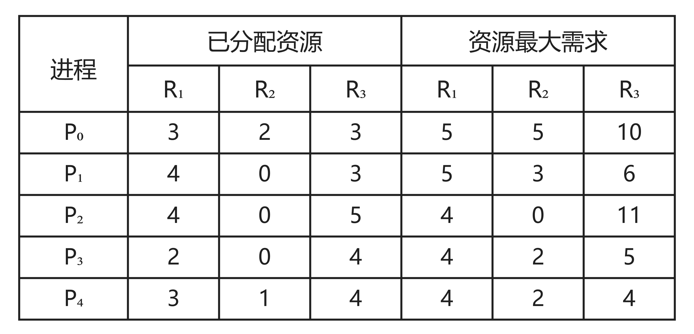

2012-01
算法和算法评价求整数n（n≥0）阶乘的算法如下，其时间复杂度是__。
int fact(int n)
{
if (n <= 1)
return 1;
return n * fact(n - 1);
}答案：B
本题讲解：递归求阶乘的时间复杂度
答案：B（O(n)）
第一步：看递归结构
fact(n) 只有一个递归出口（n ≤ 1 返回 1）和一个递归调用 fact(n-1)：每层调用只做"一次比较、一次乘法、一次返回"，都是常数时间操作，记 O(1)。递归规模每次减 1。
第二步：数递归调用次数
递归是单路的（不分叉）：fact(n) → fact(n−1) → … → fact(1)，共调用 n 次。用 fact(4) 看调用链：
| 调用层 | fact(4) | fact(3) | fact(2) | fact(1) |
|---|---|---|---|---|
| 本层工作 | 乘法+下传 | 乘法+下传 | 乘法+下传 | 直接返回 |
第三步：总代价
总操作数 = 调用次数 × 每层工作 = n × O(1) = O(n)，选 B。
易错点
- 误选 A（O(log n)）：log 级复杂度要求规模按比例折半（如二分查找）；这里是每次减 1，是线性深度。
- 误选 C / D：O(n log n)、O(n²) 需要"每层再做 O(n) 级工作"（如递归里套循环），本题每层只有常数操作。
记忆锚点：单路递归、规模每次减 1、每层 O(1) ⇒ 总复杂度 O(n)。
2012-02
栈和队列的应用已知操作符包括‘+’、‘-’、‘*’、‘/’、‘(’和‘)’。将中缀表达式 a+b-a*((c+d)/e-f)+g 转换为等价的后缀表达式 ab+acd+e/f-*-g+ 时，用栈来存放暂时还不能确定运算次序的操作符，若栈初始时为空，则转换过程中同时保存在栈中的操作符的最大个数是__。
答案：A
本题讲解：中缀转后缀时操作符栈的最大深度
答案：A（5 个）
第一步：明确转换规则
操作数直接输出；操作符入栈前，先把栈顶所有"优先级 ≥ 自己"的操作符弹出；( 直接入栈；) 负责连续弹出直到遇见 (（括号本身不输出）。
第二步：逐符号模拟，盯住栈深
| 读入 | 动作 | 栈内（左底右顶） | 栈深 |
|---|---|---|---|
| a | 输出 | 空 | 0 |
| + | 入栈 | + | 1 |
| b | 输出 | + | 1 |
| - | 弹+、入栈 | - | 1 |
| a | 输出 | - | 1 |
| * | 入栈 | -* | 2 |
| ( | 入栈 | -*( | 3 |
| ( | 入栈 | -*(( | 4 |
| c | 输出 | -*(( | 4 |
| + | 入栈 | -*((+ | 5 ← 峰值 |
| d | 输出 | -*((+ | 5 |
| ) | 弹+、弃( | -*( | 3 |
| / | 入栈 | -*(/ | 4 |
| e | 输出 | -*(/ | 4 |
| - | 弹/、入栈 | -*(- | 4 |
| f | 输出 | -*(- | 4 |
| ) | 弹-、弃( | -* | 2 |
| + | 弹*、-、入栈 | + | 1 |
| g | 输出 | + | 1 |
| 结束 | 弹出+ | 空 | 0 |
第三步：结论
同时留在栈中的操作符最多 5 个（读里层 (c+d) 中的 + 时，栈内是 - * ( ( +），选 A。
易错点
- 漏算两个
(：括号也是"暂时不能确定运算次序的操作符"，同样占栈深；只数运算符会误得 3。 - 在外层
+处误判：外层+会先把*和-弹光，栈反而变浅，不是峰值。
最深时刻发生在"双层括号内部再遇到运算符"。
2012-03
二叉树的遍历和线索二叉树若一棵二叉树的前序遍历序列为 a, e, b, d, c，后序遍历序列为 b, c, d, e, a，则根结点的孩子结点__。
答案：A
本题讲解：由前序＋后序确定根的孩子
答案：A（只有 e）
第一步：定根
前序第一个元素 = 后序最后一个元素 = 根：两个序列互相印证，根是 a。
第二步：用"孩子判别规则"推理
若根 a 有两个孩子，则：前序中紧跟根的是左孩子（左子树先访问）；后序中紧贴根的是右孩子（右子树最后访问完）。左右孩子必是不同的结点。
本题：前序中 a 后面是 e（左孩子候选），后序中 a 前面也是 e（右孩子候选）。左右都指向 e，矛盾 ⇒ a 只有一个孩子。
第三步：确认唯一孩子
只有一个孩子时，它既紧排前序根之后、又紧排后序根之前——即 e。（顺势往下推：e 的子树满足 前序 e,b,d,c / 后序 b,c,d,e，按同样规则可推出 e 的孩子是 b，整个结构自洽。）
易错点
- 误选 B「有 e、b」：b 排在前序中 e 的后面，它是 e 的子树里的结点，不是 a 的孩子。
- 误选 C「有 e、c」：c 在更深层，同理不是 a 的孩子。
- 误选 D「无法确定」：前序＋后序虽然一般不能唯一确定整棵二叉树，但在"根只有一个孩子"这种无歧义情形下，根的孩子是完全可以确定的。
口诀：前序找左、后序找右；两者重合 ⇒ 独生子。
2012-04
树形查找若平衡二叉树的高度为 6，且所有非叶结点的平衡因子均为 1，则该平衡二叉树的结点总数为__。
答案：B
本题讲解：所有非叶结点平衡因子为 1 的 AVL 树结点数
答案：B（20 个）
第一步：把条件翻译成形状
平衡因子 = 左子树高 − 右子树高。所有非叶结点平衡因子均为 1 ⇒ 每个非叶结点的左子树恰比右子树高 1 层，且左右子树内部同样满足此规则——树形被完全确定，结点数也就唯一。
第二步：列递推式
设 N(h) 是这种形状、高度为 h 的二叉树的结点数：根 1 个 ＋ 左子树 N(h−1) ＋ 右子树 N(h−2)，即
N(h) = N(h−1) + N(h−2) + 1，其中 N(0) = 0（空树）、N(1) = 1（单个结点）。
第三步：逐层计算
| h | 1 | 2 | 3 | 4 | 5 | 6 |
|---|---|---|---|---|---|---|
| N(h) | 1 | 2 | 4 | 7 | 12 | 20 |
N(2)=1+0+1=2，N(3)=2+1+1=4，N(4)=4+2+1=7，N(5)=7+4+1=12，N(6)=12+7+1=20，选 B。
易错点
- 高度约定差一层：本题按常规约定（空树高 0、单结点高 1）。若错把单结点当高度 0，相当于多算一层，会得 33（D 的来源）。
- 把"平衡因子为 1"误解成左右等高：等高（因子 0）会往满树方向算出 32 之类的数（C 的来源）；因子 1 的真实含义是左恰比右高 1。
- 递推漏掉 "+1"：忘记加根结点会得 12+7=19。
记忆锚点：N(h) = N(h−1) + N(h−2) + 1，序列 1, 2, 4, 7, 12, 20——"斐波那契式"膨胀。
2012-05
图的存储及基本操作图的遍历算法和算法评价对有n个结点、e条边且使用邻接表存储的有向图进行广度优先遍历，其算法时间复杂度是__。
答案：C
本题讲解：邻接表上有向图的 BFS 时间复杂度
答案：C（O(n+e)）
第一步：拆开开销来源
BFS 的总时间 = 访问顶点的开销 ＋ 扫描边的开销，两部分分开算再相加。
第二步：逐项分析
- 访问顶点：每个顶点入队、出队恰好一次，并做一次 visited 标记 ⇒ 共 n 次 ⇒ O(n)。
- 扫描边：一个顶点出队时，顺它对应的边链表（邻接点表）走一遍。有向图中每条弧只出现在弧尾顶点的链表里，全部链表合计恰好 e 个弧结点，每条弧只被扫一次 ⇒ O(e)。
第三步：合计
O(n) ＋ O(e) = O(n+e)，选 C。
易错点
- 选 B（O(e)）：漏掉了"每个顶点至少要被访问、标记一次"的 O(n) 项；e 可能远小于 n，不能省略。
- 选 D（O(ne)）：混淆了存储结构——那是邻接矩阵的量级：每个顶点出队后要扫整行 n 个单元判断弧是否存在，n 个顶点共 O(n²)。邻接表"按需"只存存在的弧，才是 O(n+e)。
对比记忆：邻接表上 BFS/DFS 均 O(n+e)；邻接矩阵上 BFS/DFS 均 O(n²)。
2012-06
图的存储及基本操作图的应用若用邻接矩阵存储有向图，矩阵中主对角线以下的元素均为零，则关于该图拓扑序列的结论是__。
答案：C
本题讲解：上三角邻接矩阵与拓扑序列
答案：C（存在，可能不唯一）
第一步：矩阵条件说明了什么
邻接矩阵主对角线以下全 0 ⇒ A[i][j] = 1 只可能在行号 i 小于列号 j 时出现：所有弧都从小序号顶点指向大序号顶点，"往回指"的弧不存在。
第二步：存在性——一定存在
若有回路，沿回路必须"从大序号走回小序号"，与"只向前指"矛盾 ⇒ 该图必为 DAG（有向无环图） ⇒ 拓扑序列一定存在。事实上 1, 2, 3, …, n 本身就是一个拓扑序列。
第三步：唯一性——不一定
- 不唯一的例子：3 个顶点、一条弧也没有（全 0 矩阵同样满足"下三角全 0"），此时任意排列都是拓扑序列。
- 唯一的例子：链 1→2→3→…→n，拓扑序只有一个。
所以准确结论是"存在，可能不唯一"，选 C。
易错点
- 选 B「存在且不唯一」：忽略了链状特例下拓扑序唯一。
- 选 A「存在且唯一」：忽略了可以没有任何弧的情形。
- 选 D「无法确定是否存在」：存在性由"上三角 ⇒ 无环"直接保证，是可以确定的。
上三角 ⇒ 弧全向前指 ⇒ 必无环 ⇒ 必有拓扑序；唯一与否取决于弧的具体分布。
2012-07
图的应用如右图所示的有向带权图，若采用迪杰斯特拉（Dijkstra）算法求从源点a到其他各顶点的最短路径，则得到的第一条最短路径的目标顶点是b，第二条最短路径的目标顶点是c，后续得到的其余各最短路径的目标顶点依次是__。

答案：C
本题讲解：Dijkstra 最短路径的生成次序
答案：C（f, d, e）
第 0 步：先立机制——Dijkstra 每轮在干什么，凭什么可以贪心
Dijkstra 逐轮扩张"已确定最短路径的顶点集 S"：每轮从未确定顶点里挑 dist 最小的一个收入 S，再用它的出边去松弛（更新）邻居的 dist。整套算法只有一个动作：选最小 + 松弛。
为什么挑 dist 最小的就是对的？ 关键在边的权非负：从源点 a 到任何未确定顶点的路径，都必须从 S 里某个顶点跨出去，而跨出去的每条边权 ≥ 0——绕得越远只会累加得越多。所以当前 dist 最小的那个顶点，不可能再被任何"更长的绕路"缩短，它的最短路径已经板上钉钉。这就是"一旦收入 S，dist 不再变小"的原因（对比：一旦有负权边，绕路可能更短，贪心失效，得改用 Bellman-Ford 算法）。
带着这条机制去看逐轮推导，每一步的"为什么选它"就都有了依据。
第一步：列出图的弧
a→b=2，a→c=5，b→c=1，b→d=3，c→d=3，c→e=4，c→f=1，d→e=1，d→f=4，e→f=1。
第二步：逐轮"选最小 + 松弛"（S 为已确定最短路径的顶点集）
| 轮 | 选入 S | 松弛后的 dist | 未定候选 |
|---|---|---|---|
| 1 | a(0) | b=2，c=5 | b2，c5，d∞，e∞，f∞ |
| 2 | b(2) ←第一条 | c=min(5, 2+1)=3，d=2+3=5 | c3，d5，e∞，f∞ |
| 3 | c(3) ←第二条 | d 保留 5（3+3=6 更大），e=3+4=7，f=3+1=4 | d5，e7，f4 |
| 4 | f(4) | f 无出边，不松弛 | d5，e7 |
| 5 | d(5) | e=min(7, 5+1)=6 | e6 |
| 6 | e(6) | 全部确定 | — |
第三步：读出次序
题干已给第一条 b、第二条 c；其后依次是 f → d → e，选 C。
易错点
- 第 4 位误选 d（A/B 的来源）：只盯着"离源点近的邻接顶点"，忘了 c→f=1 这条短弧使 dist(f)=4 已小于 dist(d)=5——Dijkstra 每轮选的是当前 dist 最小者，不看别的。
- 漏掉松弛的"倒挂"：e 先由 c 松弛成 7，最后被 d 松弛降为 6，最终路径是 a→b→c→d→e，不是 a→b→c→e。
记忆锚点：非负权 ⇒ 绕路只会更长 ⇒ 每轮收当前 dist 最小者进 S；收入后 dist 永不再变。
2012-08
图的应用下列关于最小生成树的叙述中，正确的是__。
I. 最小生成树的代价唯一
II. 所有权值最小的边一定会出现在所有的最小生成树中
III. 使用普里姆（Prim）算法从不同顶点开始得到的最小生成树一定相同
IV. 使用普里姆算法和克鲁斯卡尔（Kruskal）算法得到的最小生成树总不相同
答案：A
本题讲解：最小生成树的四个命题
答案：A（仅 I 正确）
第一步：抓住核心结论，并回答"为什么代价必唯一"
围绕两点：代价（权值和）唯一性 与 树形态唯一性。核心：MST 的代价必唯一，形态未必唯一（存在权值相同的边时）。
为什么形态可以不同、代价却必然相同？ 用交换论证看：设两棵不同的 MST，取一棵里有、另一棵没有的一条边 e；把 e 加进第二棵树必构成一个环，环上至少有一条边可以拿出去换（否则第二棵就不是最小了），换入换出的两条边权值相等——不然换出来的那棵会更小，与"MST"矛盾。逐次交换后两棵树边权集合完全一致，权值和自然相等。换句话说：不同的 MST 只是"并列权值的边"挑得不一样，总价纹丝不动。有了这条，四个命题的判断都有了判据。
第二步：逐个判断
- I 正确：由交换论证，任意两棵 MST 的边权集合相同，n−1 条边的权值和必相等——代价唯一。
- II 错误：反例——三角形三边权值全为 1，任取两条边都是 MST；任何一条"权值最小的边"都可能缺席某棵 MST。
- III 错误：Prim 从不同顶点出发，若存在并列权值的边，贪心顺序不同，可能长出不同形态的 MST（代价仍相等）。
- IV 错误：当 MST 唯一（如各边权互不相同）时，Prim 与 Kruskal 得到的就是同一棵树，"总不相同"不成立。
第三步：得出组合
只有 I 正确 ⇒ 选 A。
易错点
- 把"代价唯一"扩大成"树唯一"：这是 II、III、IV 各类错误的共同根源——权值并列时形态可不唯一，但代价恒唯一。
- 对 II 的直觉化误判："最小的边肯定都要"只在"全局最小权值唯一"时成立；有并列最小边时不成立。
- 对 IV 的反向误判：两算法在 MST 唯一时必然同解，"总不相同"太绝对。
记忆锚点：MST 代价必唯一，形态未必唯一；"一定 / 总不"这类绝对化表述几乎都是坑。
2012-09
B树和B+树已知一棵3阶B-树，如下图所示。删除关键字78得到一棵新B-树，其最右叶结点中的关键字是__。

答案：D
本题讲解：3 阶 B-树删除关键字（兄弟借键）
答案：D（65）
第一步：定位与删除
78 在最右叶结点 [78] 中，是叶结点可直接删除。删除后该结点剩 0 个关键字，低于 3 阶 B-树的下限 ⌈3/2⌉−1 = 1 ⇒ 发生下溢，必须调整。
第二步：看兄弟能否借
被删结点与 [60 62] 是同一个父结点 [55 65] 下的相邻兄弟。左兄弟含 2 个关键字，不少于下限还绰绰有余（≥ ⌈3/2⌉ = 2）⇒ 够借，走借键路线，不需合并。
第三步：执行借键（父子轮换"旋转"）
向左兄弟借键的标准动作：
- 父结点中分隔两兄弟的关键字 65 下降到被删结点；
- 左兄弟中最大的关键字 62 上升填补父结点的空缺。
第四步：结果
父结点变为 [55 62]，最右叶结点变为 [65]，全部结点关键字数回到 1~2 的合法范围，仍是一棵合法 3 阶 B-树。故最右叶结点中的关键字是 65，选 D。
易错点
- 把 62 直接搬进叶结点（选 A/B/C 的共同来源）：B-树借键必须经过父结点中转——62 上去、65 下来；直接平移会破坏父结点作为"分隔键"的有序职责。
- 误走合并路线：合并是把"兄弟＋父分隔键"拼成一结点，用于兄弟也只剩下限关键字时；本题兄弟有 2 个关键字，用不着。
口诀：兄弟够借就"转"——兄最大键上父，父分隔键下子。
2012-10
各种内部排序算法的比较及应用在内部排序过程中，对尚未确定最终位置的所有元素进行一遍处理称为一趟排序。下列排序方法中，每一趟排序结束都至少能够确定一个元素最终位置的方法是__。
I. 简单选择排序
II. 希尔排序
III. 快速排序
IV. 堆排序
V. 二路归并排序
答案：A
本题讲解：每趟都至少定位一个元素的排序方法
答案：A（I、III、IV）
第一步：明确判定标准
"一趟"= 对所有尚未确定最终位置的元素处理一遍。判定标准：每趟结束后，是否必有元素被"钉死"在最终位置（之后不再参与任何移动）。
第二步：逐项判断
- I 简单选择排序 ✓：每趟从未排序区选出最小者，换到未排序区头部——该元素到达最终位置，之后不再参与比较与移动。
- II 希尔排序 ✗：按增量分组做插入排序，同一元素在不同趟、不同增量组里会来回移动，没有元素保证落定最终位置。
- III 快速排序 ✓：每趟枢纽（pivot）元素归位——它左侧都不大于它、右侧都不小于它，最终位置确定。
- IV 堆排序 ✓：每趟把堆顶（当前最大值）与无序区末尾元素交换——堆顶元素落到最终位置。
- V 二路归并排序 ✗：每趟只是把有序子段两两归并成更长的有序段，除最后一趟外元素位置仍会变动，无人被钉死。
第三步：得出组合
I、III、IV ⇒ 选 A。
易错点
- 把 V 也算上：误以为"归并一趟就得到一段有序区、就定位了"——有序 ≠ 位置最终，归并出的段在后续趟中还会整体移动。
- 漏掉 I：以为简单选择"只选不排"——其实每趟交换后选中者已到最终位置且不再移动。
判别口诀：每趟有元素"归位"的是选排、快排、堆排；希尔、归并不保证。
2012-11
插入排序对一待排序序列分别进行折半插入排序和直接插入排序，两者之间可能的不同之处是__。
答案：D
本题讲解：折半插入排序与直接插入排序的差异
答案：D（元素之间的比较次数）
第一步：找出两者的唯一区别
折半插入排序 = 直接插入排序中把"在有序区里找插入位置"由顺序比较换成折半查找，定位之后的移动、插入动作原封不动。所以只需逐项对比"哪些环节变了"。
第二步：逐项比对
| 对比项 | 结论 | 理由 |
|---|---|---|
| 总趟数 | 相同 | 都是 n−1 趟（逐个把第 2…n 个元素插入前面有序区） |
| 元素移动次数 | 相同 | 移动由初始序列的逆序数决定，与查找方式无关 |
| 辅助空间 | 相同 | 都只用一个暂存单元（哨兵），O(1) |
| 比较次数 | 可能不同 | 折半查找比较次数只与有序区长度有关（约 log₂i 次），与初始排列无关；直接插入的比较次数随初始有序度变化 |
第三步：结论
只有比较次数可能不同，选 D。
易错点
- 以为折半插入连移动次数也省了：折半只优化"找位置"，元素该后移多少次还是后移多少次。
- 忽略比较次数与初始序列的关系：直接插入在基本有序时只需 n−1 次左右比较；折半插入固定约 Σlog₂i 次，两者可能不同。
记忆锚点：折半插入 = "比较更准，移动一样多，空间一样少"。
2012-12
计算机的性能指标假定基准程序A在某计算机上的运行时间为100秒，其中90秒为CPU时间，其余为I/O时间。若CPU速度提高50%，I/O速度不变，则运行基准程序A所耗费的时间是__。
答案：D
本题讲解：CPU 提速后程序总时间的计算
答案：D——新总时间 = 提速后的 CPU 时间 + 原样保留的 I/O 时间 = 70s。
第一步：拆分时间构成
基准程序 A 总耗时 100s，其中 CPU 时间 90s，I/O 时间 = 100 − 90 = 10s。程序是"CPU 算一段 + I/O 传一段"串起来的，CPU 提速只能缩短前者。
第二步：CPU 部分按"工作量不变"折算
CPU 速度提高 50%，即新速度 = 原速度 × 1.5。要完成的计算工作量不变，由「工作量 = 速度 × 时间」得：时间与速度成反比。
新 CPU 时间 = 90 ÷ 1.5 = 60s
第三步：I/O 部分照抄，再求和
I/O 速度不变，I/O 时间仍为 10s。
总时间 = 60 + 10 = 70s，选 D。
易错点
- 把"速度提高 50%"当成"时间减半"：100 − 90×0.5 = 55s，对应干扰项 A——速度提高 50% 是时间变为 2/3，减半对应的是速度提高 100%。
- 只算 CPU 忘加 I/O：得 60s，对应干扰项 B——总时间必须把两段相加。
- 把提速错套到总时间上：拿 100s 直接折算（约 66.7s）再凑成 65s，对应干扰项 C——I/O 时间不能被 CPU 提速缩短。
记忆点：谁提速，就只折算谁的时间；其余部分原样保留。
2012-13
数制与编码假定编译器规定int和short型长度分别为32位和16位，执行下列C语言语句：
unsigned short x=65530;
unsigned int y=x;
得到y的机器数为__。
答案：B
本题讲解：unsigned short 扩展为 unsigned int 的机器数
答案：B——无符号数加长位数采用零扩展，y 的机器数为 0000 FFFAH。
第一步：先写出 x 的 16 位机器数
x = 65530，而 65535 的十六进制是 FFFFH，故 x = FFFFH − 5H = FFFAH（16 位无符号数）。
第二步：短的无符号数加长 → 高位补 0
把 16 位的 unsigned short 赋给 32 位的 unsigned int，数值不变，只需在高位补 0（零扩展）：16 位的 FFFA 变成 32 位的 0000 FFFA。
为什么补 0 数值就不变？ 无符号数没有符号位，它的值就是各位权重之和：FFFAH = 15×16³ + 15×16² + 15×16 + 10 = 65530。高位补 0 不新增任何权重项，值当然纹丝不动——扩展前后的位串只在"高位多几个 0"，权重和一字不差。
那有符号数为什么反而要补符号位？ 因为补码位串是按模 2ⁿ 解释的：FFFAH 当 signed short 读时代表 −6（65530 − 65536 = −6）。把它放进 32 位的更大模里，要仍然表示同一个负数，高位必须补 1 得 FFFF FFFA（= 2³² − 6，在模 2³² 下同样代表 −6）才与原数同余；若补 0 就变成了 +65530。所以扩展规则取决于类型解释：无符号补 0，有符号补符号位——本题 x 是 unsigned short，走补 0 这条路。
第三步：对照干扰项，确认来源
若 x 是 signed short 且值为负数，加长时按符号扩展高位补 1，才会得到 FFFF FFFA（选项 D）——但本题 x 是 unsigned，根本没有符号位，一律补 0。选项 A、C 里的 7FFA 则是十进制转十六进制就错了的结果。
答案选 B。
易错点
- 误用符号扩展：
FFFF FFFA是把 65530 当负数补 1 的结果；unsigned 类型扩展永远补 0。 - 见到最高位是 1 就按负数处理：FFFA 的最高位虽是 1，但 unsigned 类型没有符号位，65530 就是它的大小。
- 十进制转十六进制出错：65530 = FFFFH − 5H = FFFAH，不是 7FFAH（7FFAH = 32762）。
记忆点：无符号扩展补 0，有符号扩展补符号位。
2012-14
浮点数的表示与运算float类型（即IEEE 754单精度浮点数格式）能表示的最大正整数是__。
答案：D
本题讲解：float 能表示的最大正整数
答案：D——float 的最大正数本身就是整数，即 (2 - 2-23) × 2127 = 2128 - 2104。
第一步：明确"最大正整数"是什么
float 能表示的最大数恰好是一个整数，所以 float 能表示的最大正整数就是它的最大规格化正数——比它更大的整数都无法精确表示。
第二步：用 IEEE 754 单精度格式构造最大数
单精度 = 1 位符号 + 8 位阶码 + 23 位尾数。构造最大正数：
- 符号位 S = 0；
- 阶码全 1（E = 255）被保留给 ±∞ 和 NaN，不能表示数，故取最大可用阶码 E = 254，真指数 = 254 − 127 = 127；
- 尾数 M 全 1，加上隐含的最高位 1，即 1.M = 1.111…1 = 2 − 2-23。
两个"为什么"提前答掉： ①尾数为什么要加隐含的 1？规格化二进制数必写成 1.xxxx × 2E，整数位的 1 永远存在，索性不存它——23 位的存储就能挤出 24 位有效精度，这叫隐藏位技术。M 全 1 时 1.M 就是最大的尾数 = 2 − 2-23（离 2 差一个 2-23）。②阶码为什么要减 127（偏置）？8 位若按补码存，负指数的比较和运算都别扭；改存"真指数 + 127"这个无符号数，硬件比较大小、做乘法都直接。所以存的最大阶码 254 对应真指数 254 − 127 = 127，而全 1 的 255 被保留给 ±∞ / NaN。
最大值 = 1.M × 2127 = (2 − 2-23) × 2127
第三步：展开成选项形式
(2 − 2-23) × 2127 = 2 × 2127 − 2-23 × 2127 = 2128 - 2104，选 D。
易错点
- 阶码取 255：E 全 1 是无穷大 / NaN 的保留编码，不能当数值用——选项 B、C 里 2127 开头的式子常由此而来。
- 忘记隐含的"1."：尾数是 1.M 不是 0.M，展开后是 2 − 2-23，不是 1 − 2-23，指数也就不是 126 或 127 开头的选项。
- 指数运算出错：偏置常数是 127；−2-23 × 2127 = −2104，不要把 23 直接加到 127 上。
记忆点：float 最大值 = (2 − 2-23) × 2127 = 2128 − 2104。
2012-15
浮点数的表示与运算某计算机存储器按字节编址，采用小端方式存放数据。假定编译器规定int型和short型长度分别为32位和16位，并且数据按边界对齐存储。某C语言程序段如下：
struct{
int a;
char b;
short c;
} record;
record.a=273;若record变量的首地址为0xC008，则地址0xC008中内容及record.c的地址分别为__。
答案：D
本题讲解：结构体边界对齐 + 小端方式的内存布局
答案：D——地址 0xC008 中内容是 0x11，record.c 的地址是 0xC00E。
第一步：把 273 写成 4 个字节
record.a = 273 = 0x00000111，按 int 的 4 个字节从高到低依次是 00、00、01、11。
第二步：小端方式决定字节落位
小端 = 数据的低位字节放在低地址。a 按边界对齐占 0xC008～0xC00B 四个字节：最低字节 11 放进最低地址 0xC008，其后依次是 01、00、00。所以地址 0xC008 的内容是 0x11。
第三步：按边界对齐排 b 和 c
b 是 char（1 字节，任意地址都能放）→ 0xC00C。c 是 short（2 字节，地址必须是 2 的倍数）：下一个可用地址 0xC00D 是奇地址，不满足对齐，跳过；c 从 0xC00E 开始，占 0xC00E～0xC00F。
为什么要有边界对齐这条规矩？ 内存与 CPU 之间的数据总线宽度固定（int 一次取 4 字节、short 一次取 2 字节），访问电路默认从"自身宽度的整数倍地址"开始一个总线周期取回整个数据。若让 short 从 0xC00D 这种奇地址起放，它会横跨两个对齐边界，硬件得发两次访存、再把两半拼起来——慢且电路复杂。所以编译器宁可在这里留 1 字节空洞（0xC00D 作填充）也要把 c 推到 0xC00E，这就是 b 与 c 之间"空一拍"的由来。
易错点
- 按大端方式放 273：大端会把最高字节 00 放进 0xC008（干扰项 A、B 的 0x00），本题明确是小端。
- 让 c 顶在 0xC00D：short 必须 2 字节对齐，0xC00D 奇地址不合法（干扰项 A、C 的 0xC00D）。
- 忘记对齐产生的空洞：b 与 c 之间的 0xC00D 是 1 字节填充，不属于任何成员。
记忆点：小端 = 低字节在低地址；short / int 的起始地址必须分别是 2 / 4 的倍数，放不下就留空洞。
2012-16
主存储器下列关于闪存（Flash Memory）的叙述中，错误的是
答案：A
本题讲解：闪存（Flash Memory）的特性辨析
答案：A——闪存读、写速度不一样快，写入明显慢于读取，A 的说法错误。
第一步：抓住"写慢"的原因
闪存的信息确实可读可写，但写入前必须先整块擦除（把浮栅上的电荷清掉），擦除加写入的耗时远大于一次读取，所以读快写慢——A 错，本题选它。
第二步：核对三个正确说法
- B 对：闪存的存储元是浮栅 MOS 管，属于半导体存储器。
- C 对：浮栅上的电荷掉电后仍保持，是非易失性存储器。
- D 对：闪存可按地址随机访问，U 盘、固态硬盘（SSD）都用它作外部存储器。
易错点
- 以为"可读写"就等于"读写一样快"：这是 A 的陷阱；U 盘写入比读取慢得多，就是擦除开销造成的。
- 把闪存当易失性存储器：它掉电不丢信息，与 SRAM、DRAM 完全不同。
- 以为外存都不能随机访问：闪存按块随机访问，D 是正确说法；不能随机访问的是磁带这类顺序存储设备。
记忆点：闪存 = MOS 浮栅管 + 非易失 + 可随机访问，但读快写慢（写前先整块擦除）。
2012-17
高速缓冲存储器假设某计算机按字编址，Cache 有 4 个行，Cache 和主存之间交换的块大小为 1 个字。若 Cache 的内容初始为空，采用 2 路组相联映射方式和 LRU 替换策略。访问的主存地址依次为 0,4,8,2,0,6,8,6,4,8 时，命中 Cache 的次数是
答案：C
本题讲解：2 路组相联 + LRU 的 Cache 命中模拟
答案：C——命中 3 次（第 7、8、10 次访问）。
第一步：确定映射方式
按官方答案的划分口径：组号 = 主存地址 mod 4，地址 0、4、8 落在组 0，地址 2、6 落在组 2；每组可放 2 块，组内全相联比较，装不下时按 LRU 淘汰本组内最久未被访问的块。
第二步：逐次模拟（组内块按"最近使用 → 最久未用"排列）
| 次数 | 地址 | 组号 | 结果 | 组内变化 |
|---|---|---|---|---|
| 1 | 0 | 0 | 缺失 | 组0：[0] |
| 2 | 4 | 0 | 缺失 | 组0：[4, 0] |
| 3 | 8 | 0 | 缺失，淘汰 0 | 组0：[8, 4] |
| 4 | 2 | 2 | 缺失 | 组2：[2] |
| 5 | 0 | 0 | 缺失，淘汰 4 | 组0：[0, 8] |
| 6 | 6 | 2 | 缺失 | 组2：[6, 2] |
| 7 | 8 | 0 | 命中 | 组0：[8, 0] |
| 8 | 6 | 2 | 命中 | 组2：[6, 2] |
| 9 | 4 | 0 | 缺失，淘汰 0 | 组0：[4, 8] |
| 10 | 8 | 0 | 命中 | 组0：[8, 4] |
命中 3 次，选 C。
易错点
- LRU 淘汰对象找错：每次缺失只在本组内淘汰最久未用的块，第 3 次淘汰的是块 0 不是块 4。
- 命中后忘记刷新使用记录：第 7 次命中 8 之后组 0 的最久未用者变成 0，所以第 9 次淘汰 0；若不刷新就会淘汰错。
- 口径之争要心里有数：若按"4 行 ÷ 2 路 = 2 组、组号 = 地址 mod 2"划分，本题全部偶地址都落进同一组，逐次模拟得命中 1 次——这是本题的争议点；考试以官方答案 C 的口径为准。
记忆点：组相联 = 先按组号定位组，再在组内全相联比较 + LRU 淘汰；命中要把该块刷新为"最近使用"。
2012-18
控制器的功能和工作原理某计算机的控制器采用微程序控制方式，微指令中的操作控制字段采用字段直接编码法，共有 33 个微命令，构成 5 个互斥类，分别包含 7、3、12、5 和 6 个微命令，则操作控制字段至少有
答案：C
本题讲解：微指令操作控制字段的位数（字段直接编码）
答案：C——15 位。
第一步：字段直接编码法的分组原则
字段直接编码法把操作控制字段分成若干小段，把互斥的微命令编进同一段，各段独立译码、互不干扰。本题 33 个微命令构成 5 个互斥类 → 控制字段分成 5 段，段位数分别由各类的命令数决定。
为什么只有"互斥"的命令才能编进同一段？ 每段配一个译码器，一次译码只点亮一条输出线——同一段在同一条微指令周期里最多发出 1 个微命令。若把两个可以同时出现（相容）的命令塞进同一段，它们就永远无法一起发出，控制功能直接残废；反过来，互斥（不可能同时需要）的命令共享一段恰好不损失任何组合能力。所以"互斥 → 同段、相容 → 分段"是分段的唯一依据。
第二步：每段要留一个"不发命令"的状态
为什么每段必须留一个"不发命令"的状态？ 一段 k 位有 2k 个编码，译码器每个输出都被迫对应发出某条命令；但微指令经常需要"这一类操作什么都不做"（其他段照常工作），如果所有编码都绑死了命令，这种空操作就表达不出来。所以约定留出一个编码（通常全 0）表示本段不发任何微命令，可用命令数只剩 2k − 1。于是每段要编码的状态数 = 微命令数 + 1，段位数 = log2(命令数 + 1) 向上取整：
| 互斥类 | 命令数 | 状态数（+1） | 位数 |
|---|---|---|---|
| 1 | 7 | 8 | 3 |
| 2 | 3 | 4 | 2 |
| 3 | 12 | 16 | 4 |
| 4 | 5 | 8 | 3 |
| 5 | 6 | 8 | 3 |
第三步：求和
3 + 2 + 4 + 3 + 3 = 15 位，选 C。
易错点
- 只按互斥类个数给位数：5 个类 → 5 位（干扰项 A）——错在每类内部有多个命令，1 位编不下。
- 把 33 个命令当一个字段编：log2(33) 向上取整约 6 位（干扰项 B）——错在这 33 个命令分属 5 个互斥类，相容的命令不能编进同一段。
- 不分组、一位对应一个命令：33 位（干扰项 D）——那是水平直接控制法的思路，不是字段直接编码。
- 忘记留"不发命令"状态：每个字段都要空出一个全 0 状态，位数按"命令数 + 1"取对数。
记忆点：字段直接编码的位数 = 各互斥类的 log2(命令数 + 1) 向上取整之和。
2012-19
总线事务和定时某同步总线的时钟频率为 100MHz，宽度为 32 位，地址/数据线复用，每传输一个地址或数据占用一个时钟周期。若该总线支持突发（猝发）传输方式，则一次“主存写”总线事务传输 128 位数据所需要的时间至少是
答案：C
本题讲解：同步总线突发传输的时间计算
答案：C——50ns。
第一步：算出时钟周期
时钟频率 100MHz → 时钟周期 = 1 ÷ 100MHz = 10ns。同步总线上所有传输动作都以时钟周期为计量单位。
第二步：数清一个"主存写"事务要占几个周期
总线宽度 32 位，地址/数据线复用：写事务必须先用 1 个周期发出地址；突发（猝发）方式下地址只需发一次，后续数据连续传送。128 位数据 ÷ 32 位/次 = 4 个数据，各占 1 个周期。
合计 1 + 4 = 5 个周期。
第三步：乘周期得总时间
5 × 10ns = 50ns，选 C。
易错点
- 漏掉地址周期：只算 4 × 10 = 40ns（干扰项 B）——地址/数据线复用，必须先占 1 个周期传地址。
- 忘记"突发"的含义：若以为每个数据都要重发地址，就会算出 8 个周期 80ns（干扰项 D）之类的偏大值；突发传输只在开头发一次地址。
- 频率换周期出错：100MHz 对应 10ns，不是 100ns，也不是 20ns。
记忆点：突发传输时间 = (1 个地址周期 + 数据个数个数据周期) × 时钟周期。
2012-20
总线概述下列关于 USB 总线特性的描述中，错误的是
答案：D
本题讲解：USB 总线特性辨析
答案：D——USB 是串行总线，一次只能传输 1 位，"同时可传输 2 位数据"说法错误。
第一步：抓住 D 的错误点
USB 的全称是 Universal Serial Bus——串行总线，数据一位接一位地传输，"同时可传输 2 位数据"与串行传输方式直接矛盾（D 前半句错）。后半句"数据传输率高"倒是对的，但前半句已足以判错，本题选 D。
第二步：核对三个正确说法
- A 对：USB 支持外设的即插即用和热插拔。
- B 对：通过集线器（Hub）级联，可树形连接多台外设（理论上最多 127 个）。
- C 对：USB 是连接鼠标、键盘、打印机、U 盘等不同外设的通信总线。
易错点
- 被"数据传输率高"带偏：串行不等于慢，USB 2.0 可达 480Mbps、USB 3.0 达 5Gbps——高速度靠提高传输频率实现，不靠一次传多位。
- 混淆串行与并行总线：一次同时传多位的是并行总线；USB 与 PCIe、SATA 一样都是串行总线。
- 把"级联"当成错误说法：USB 的级联是经集线器实现的规范树形连接，B 是 USB 的正式特性。
记忆点：USB = 串行（一次 1 位）+ 即插即用 + 热插拔 + 集线器级联。
2012-21
总线概述I/O接口下列选项中，在 I/O 总线的数据线上传输的信息包括
I. I/O 接口中的命令字
II. I/O 接口中的状态字
III. 中断类型号
答案：D
本题讲解：I/O 总线数据线上传输的信息
答案：D——命令字、状态字、中断类型号都经数据线传输，Ⅰ、Ⅱ、Ⅲ 全对。
第一步：分清 I/O 总线的三类信号线
CPU 与 I/O 接口之间的 I/O 总线包含数据线、地址线和控制线。地址线、控制线是单向的（由 CPU 发向 I/O 接口）；数据线是双向的——凡 CPU 与接口之间要传的"内容"都走数据线。
第二步：逐项核对
- Ⅰ 命令字：CPU 执行输出指令，把命令字经数据线写入接口中的命令寄存器 → 走数据线。
- Ⅱ 状态字：CPU 执行输入指令，把接口状态寄存器中的状态字经数据线读回 CPU → 走数据线。
- Ⅲ 中断类型号：中断响应时，中断控制器把中断类型号经数据线送给 CPU，供其形成中断向量 → 走数据线。
第三步：得出结论
三项全部经数据线传输，选 D。
易错点
- 以为状态字走控制线：控制线传的是时序控制与应答信号（读/写命令、中断请求、中断响应），不是状态内容本身。
- 以为中断类型号走地址线：类型号是 CPU 要读取的"数据"，由中断控制器经数据线提供，CPU 用它查中断向量表得到服务程序入口。
- 忽略数据线的双向性：命令字（CPU → 接口）与状态字（接口 → CPU）方向相反，但走的都是同一条双向数据线。
记忆点：数据线传"内容"——数据、命令字、状态字、中断类型号；地址线传地址；控制线传时序与应答。
2012-22
异常和中断机制响应外部中断的过程中，中断隐指令完成的操作，除保护断点外，还包括
I. 关中断
II. 保存通用寄存器的内容
III. 形成中断服务程序入口地址并送 PC
答案：B
本题讲解：中断隐指令完成哪些操作
答案：B——仅Ⅰ、Ⅲ。
第一步：明确中断隐指令是什么
中断隐指令不是指令系统中的真实指令，而是 CPU 在响应中断阶段由硬件自动完成的一组操作，包括三件事：①关中断；②保护断点；③形成中断服务程序入口地址并送 PC。
第二步：逐项核对
- Ⅰ 关中断：属于隐指令——防止在保存断点等关键硬件操作期间被新的中断打断。
- Ⅲ 形成中断服务程序入口地址并送 PC：属于隐指令——硬件负责找到服务程序入口，让 CPU 转去执行。
- Ⅱ 保存通用寄存器的内容：不属于隐指令——通用寄存器是程序的"现场"，由中断服务程序开头的指令（软件）压栈保存，硬件隐指令不管这件事。
第三步：得出结论
隐指令完成的是Ⅰ和Ⅲ，选 B。
易错点
- 把保存现场算进隐指令：隐指令只保护"断点"（PC）这一个硬件现场；通用寄存器内容是服务程序里用压栈指令保存的。
- 以为关中断可有可无：不先关中断，断点可能还没存好就被新中断覆盖，现场保护会出错。
- 混淆隐指令与中断服务程序：隐指令是纯硬件自动完成、对程序员透明的；中断服务程序是程序员编写的软件，两者的分工是本考点核心。
记忆点：中断隐指令三件事——关中断、保护断点、送服务程序入口地址；通用寄存器现场由服务程序保存。
2012-23
操作系统的运行环境下列选项中，不可能在用户态发生的事件是
答案：C
本题讲解：用户态不可能发生的事件辨析
答案：C（进程切换）。
第一步：抓住判断标准
判断一个事件能否在用户态发生，就看它是否需要执行特权指令、是否必须由内核完成。修改页表基址寄存器、置中断屏蔽位、保存恢复进程上下文等都是特权指令，只能在核心态执行；不需要特权指令的普通指令和事件，用户态程序同样会遇到。
第二步：逐项排查
- 系统调用（A）：调用本身发生在用户态——用户程序执行陷入指令请求内核服务，之后才转入核心态执行。「发出系统调用」是用户态可发生的事件，排除。
- 外部中断（B）：中断信号随时可能到达，与 CPU 当前处于用户态还是核心态无关，用户态程序同样会被外部中断打断，排除。
- 缺页（D）：用户程序执行访存指令、所访页面不在内存时触发缺页异常，异常发生在用户态，排除。
- 进程切换（C）：选择哪个进程运行、保存旧进程上下文、恢复新进程上下文、修改 PC 和 PSW、切换页表寄存器，全是内核工作，必须用特权指令，只能在核心态完成——不可能在用户态发生。
易错点
- 误选 A：把「系统调用由核心态执行」混淆成「系统调用发生在核心态」——发出在用户态，处理在核心态。
- 误选 B 或 D：以为中断、异常只有核心态才有——外部中断和缺页恰恰常在用户态执行指令时发生。
结论：进程切换只能由内核在核心态完成，选 C。
2012-24
操作系统的运行环境中断处理和子程序调用都需要压栈以保护现场，中断处理一定会保存而子程序调用不需要保存其内容的是
答案：B
本题讲解：中断处理与子程序调用的压栈差异
答案：B（程序状态字寄存器）。
第一步：两种压栈各自保护什么
- 子程序调用：本质是同一程序内部的转移。call 指令自动把返回地址（程序计数器 PC 的内容）压栈，按调用约定还可能保存部分通用寄存器；但 CPU 的工作状态（状态标志、中断允许位等）没有改变，PSW 不需要保存。
- 中断处理：打断的是另一个程序的执行。中断响应会改变 CPU 的工作状态（如用户态转核心态、修改中断屏蔽标志），返回被中断程序时必须恢复原状，所以一定保存 PSW（连同断点 PC）。
第二步：逐项判断
| 选项 | 中断处理 | 子程序调用 | 是否符合「一定保存 vs 不需要」 |
|---|---|---|---|
| A 程序计数器 | 保存断点 | 压入返回地址 | 两者都要，排除 |
| B 程序状态字 | 必须保存以便恢复 | 不需要 | 符合 |
| C 通用数据寄存器 | 保存将使用的现场 | 按约定也可能保存 | 不是该关系 |
| D 通用地址寄存器 | 同上 | 同上 | 不是该关系 |
易错点
- 误选 A：以为只有中断才压栈 PC——子程序调用的返回地址本来就是压栈保存的。
- 误选 C/D：通用寄存器并非「子程序一定不需要」，普通调用也会按约定保存现场。
结论：中断处理一定保存、子程序调用不需要保存的是 PSW，选 B。
2012-25
虚拟内存管理下列关于虚拟存储器的叙述中，正确的是
答案：B
本题讲解：虚拟存储器的实现基础与容量限制
答案：B（虚拟存储只能基于非连续分配技术）。
第一步：虚拟存储靠什么实现
虚拟存储具有多次性、对换性、虚拟性三大特征：程序被分成若干小块，「部分装入、按需调页（调段）、不够再换出」。这要求作业离散地分散存放在内存中，即必须基于离散（非连续）分配——请求分页、请求分段都建立在分页/分段这类非连续分配之上。连续分配（如固定分区、单一连续分配）要求作业一次性装入一个连续区域，无法支持部分调入，所以 A 错、B 对。
第二步：容量到底受什么限制
虚拟存储容量 = min（机器地址结构位数决定的寻址空间，内存容量 + 外存交换区容量）。
- C「只受外存容量限制」错：内存是换入换出的载体，驻留部分必须装在内存里，内存太小同样装不下。
- D「只受内存容量限制」错：被换出的页面放在外存，外存太小也装不下。
- 两个因素都不是「唯一」限制，此外机器地址位数还构成寻址上限。
易错点
- 误选 A：把虚拟存储想成基于连续分配——恰恰相反，连续分配不支持虚拟存储。
- 误选 C/D：牢记容量由「内存 + 外存之和」与地址位数共同决定，任何「只受单一因素限制」的说法必错。
结论：虚拟存储只能基于非连续分配技术，选 B。
2012-26
I/O管理概述操作系统的 I/O 子系统通常由四个层次组成，每一层明确定义了与邻近层次的接口。
其合理的层次组织排列顺序是___。
答案：A
本题讲解：I/O 子系统的四层结构排序
答案：A。
第一步：记住自上而下的标准层次
I/O 子系统四层，从用户到硬件依次为：
用户级 I/O 软件 → 设备独立（无关）软件 → 设备驱动程序 → 中断处理程序，最底下才是硬件本身。
第二步：用「离硬件远近」排干扰项
- 中断处理程序在设备完成时被触发，是最靠近硬件的底层——任何把中断处理放在驱动之上、甚至放在用户层附近的排序都错，B、D 因此排除。
- 设备驱动程序直接读写设备控制器的寄存器，必须贴着硬件，位于设备无关软件之下；C 把「驱动」与「设备无关软件」的次序颠倒，排除。
- 设备无关软件负责命名、保护、缓冲、设备分配等与具体设备种类无关的工作，位于用户软件与驱动之间。
- 逐层验证 A：用户级 I/O 软件 → 设备无关软件 → 设备驱动程序 → 中断处理程序，与标准顺序一致。
易错点
- 误选 B/C/D：混淆「设备驱动程序」与「中断处理程序」的上下层——驱动在上、中断处理在最底层。
- 忘记设备无关软件的位置：它一定夹在用户级软件与驱动之间，不会出现在更底层。
结论：正确排序为 用户级I/O软件、设备无关软件、设备驱动程序、中断处理程序，选 A。
2012-27
死锁假设5个进程 P0、P1、P2、P3、P4 共享三类资源 R1、R2、R3，这些资源总数分别为18、6、22。T0 时刻的资源分配情况如下表所示，此时存在的一个安全序列是。

答案：D
本题讲解：银行家算法的安全性检查
答案：D（P3, P4, P2, P1, P0）。
第一步：算出 Need 与 Available
Need = Max − Allocation，Available = 资源总量 − 已分配之和：
| 进程 | Allocation（R1 R2 R3） | Max（R1 R2 R3） | Need（R1 R2 R3） |
|---|---|---|---|
| P0 | 3 2 3 | 5 5 10 | 2 3 7 |
| P1 | 4 0 3 | 5 3 6 | 1 3 3 |
| P2 | 4 0 5 | 4 0 11 | 0 0 6 |
| P3 | 2 0 4 | 4 2 5 | 2 2 1 |
| P4 | 3 1 4 | 4 2 4 | 1 1 0 |
已分配合计为 (16, 3, 19)，总量为 (18, 6, 22)，故 Available = (2, 3, 3)。
第二步：逐个验证四个选项
- A：第一步就要 P0，Need (2,3,7) 的 R3 需 7 > 可用 3，第一步就走不通，排除。
- C：第一步就要 P2，Need (0,0,6) 的 R3 需 6 > 可用 3，同样走不通，排除。
- B：P1 的 Need (1,3,3) ≤ (2,3,3)，P1 可完成并释放 (4,0,3)，Available 变为 (6,3,6)；但第二步是 P0，其 R3 需 7 > 6，卡死，排除。
- D：P3 (2,2,1) ≤ (2,3,3) → 释放 (2,0,4) 后 Available (4,3,7)；P4 (1,1,0) → (7,4,11)；P2 (0,0,6) → (11,4,16)；P1 (1,3,3) → (15,4,19)；P0 (2,3,7) → (18,6,22)。五个进程依次全部完成，是安全序列。
易错点
- 忘记减去已分配：Available 必须用总量减去所有 Allocation；误用总量 (18,6,22) 会把 A、C 也判为可行。
- 只检查第一个进程：安全序列要求每一步都满足 Need ≤ Available，B 就是「第一步可行、第二步卡死」的陷阱。
结论：P3, P4, P2, P1, P0 是安全序列，选 D。
2012-28
操作系统的运行环境进程与线程简介文件系统基础若一个用户进程通过read系统调用读取一个磁盘文件中的数据，则下列关于此过程的叙述中，正确的是。
Ⅰ. 若该文件的数据不在内存中，则该进程进入睡眠等待状态
Ⅱ. 请求read系统调用会导致CPU从用户态切换到核心态
Ⅲ. read系统调用的参数应包含文件的名称
答案：A
本题讲解：read 系统调用的三个判断
答案：A（仅Ⅰ、Ⅱ）。
第一步：理解 read 的执行流程
用户进程调用 read 读取磁盘文件时：先通过陷入指令把请求交给内核 → CPU 从用户态切换到核心态，由内核执行系统调用 → 内核检查所需数据是否已在内存（缓冲区/页缓存）中 → 若不在，发起磁盘 I/O，进程阻塞（睡眠）等待数据到来；I/O 完成后被唤醒继续执行。
第二步：逐条判断
- Ⅰ 正确：数据不在内存时必须等待磁盘传输完成，调用 read 的进程主动进入睡眠（阻塞）状态，让出 CPU。
- Ⅱ 正确：系统调用要执行特权指令、访问内核数据结构，必须先由用户态切入核心态，这是系统调用的固有过程。
- Ⅲ 错误：read 的参数是文件描述符 fd（open 时返回的编号），而不是文件名。文件名只在 open 系统调用中使用，之后内核靠打开文件表项定位文件，read 只需要 fd、缓冲区地址和长度。
易错点
- 把Ⅲ当对：混淆 open 与 read 的参数——open 用文件名，read 用 fd。
- 误判Ⅰ：以为请求 I/O 的进程仍继续运行——同步 read 在数据未就绪时必然阻塞等待。
结论：Ⅰ、Ⅱ 正确，Ⅲ 错误，选 A。
2012-29
CPU调度一个多道批处理系统中仅有 P1 和 P2 两个作业，P2 比 P1 晚5ms到达，它们的计算和I/O操作顺序如下：
P1：计算60ms，I/O 80ms，计算20ms
P2：计算120ms，I/O 40ms，计算40ms
若不考虑调度和切换时间，则完成两个作业需要的时间最少是。
答案：B
本题讲解：多道批处理系统的作业完成时间
答案：B（260ms）。
第一步：梳理并行条件
单处理机上计算不能并行，但计算与 I/O 可以并行。P1 在 t=0 到达，P2 在 t=5 到达；P1 的流程是「计算 60 → I/O 80 → 计算 20」，P2 是「计算 120 → I/O 40 → 计算 40」。
第二步：画时间线逐步推演
| 时间段 | 处理机 CPU | I/O 设备 | 说明 |
|---|---|---|---|
| 0 – 60 | P1 计算① | 空 | P2 还没到（t=5 到达后只能就绪等待） |
| 60 – 140 | P2 计算① | P1 I/O | P1 计算完转 I/O，CPU 让给 P2，两者并行 |
| 140 – 180 | P2 计算① | 空 | P1 的 I/O 完成，但 CPU 被 P2 占着，P1 等待 |
| 180 – 200 | P1 计算② | P2 I/O | P2 第一段算完转 I/O，P1 上 CPU 做 20ms 收尾 |
| 200 – 220 | 空闲 | P2 I/O | P1 已完成（200ms）；CPU 空闲等 P2 从 I/O 回来 |
| 220 – 260 | P2 计算② | 空 | P2 的 I/O 完成，做最后 40ms 计算 |
- P1 完成时刻 = 200ms；P2 完成时刻 = 260ms。
- 两个作业全部完成需要的时间 = max(200, 260) = 260ms。
易错点
- 误选 C/D（顺序执行）：若两道作业严格串行、计算与 I/O 不并行，总时间会超过 340ms——多道系统的意义就在于 I/O 与计算并行。
- 误选 A（240ms）：忽略了 t=200–220 这段 CPU 空闲——P2 的 I/O 没结束，最后 40ms 计算必须等它回到 CPU。
- 忘记 P2 到达时刻：P2 晚 5ms 到达，但这 5ms 内 CPU 正被 P1 占用，不影响结果。
结论：P1 于 200ms、P2 于 260ms 完成，两个作业完成最少需要 260ms，选 B。
2012-30
CPU调度若某单处理器多进程系统中有多个就绪态进程，则下列关于处理机调度的叙述中，错误的是。
答案：C
本题讲解：处理机调度的时机
答案：C（题目要求选出错误的叙述）。
第一步：先明确哪些时机能调度
内核能在安全切换进程上下文的时刻进行调度。常见引发调度的时机：进程结束/终止、进程阻塞（如等待 I/O）、时钟中断时间片用完、系统调用完成返回用户态、创建新进程等。据此检查：
- A 对：进程结束时（终止后）必然要选下一个进程运行，「能调度」成立。
- B 对：创建新进程后（例如新进程优先级更高、或当前进程让出），存在调度时机，「能调度」成立。
- D 对：系统调用完成、即将返回用户态时，内核常检查是否需要切换进程，「能调度」成立。
第二步：辨析 C 为什么错
「在进程处于临界区时不能进行处理机调度」把话说绝对了。临界区的规则是互斥进入——不允许两个进程同时处于同一临界资源的临界区。处于临界区的进程仍可能被打断，把它调度出去并换上一个不使用该临界资源的进程，互斥并不会被破坏。所以「临界区中一定不能调度」是错误叙述。真正要避免的是把需要同一临界资源的进程调度进来。
易错点
- 误选 A/B：把「能调度」理解成「必须调度」——A、B 只说存在这种时机即可，成立。
- 误信 C：把「另一进程不能进入同一临界区」扩大成「处于临界区就不能发生调度」。
结论：错误的是 C，处于临界区并非绝对禁止调度，选 C。
2012-31
进程与线程简介下列关于进程和线程的叙述中，正确的是。
答案：A
本题讲解：进程与线程的基本关系
答案：A。
第一步：摆正两个「基本单位」
进程是资源分配（拥有资源）的基本单位，线程是处理机调度的基本单位。这个结论与系统是否引入线程无关：不支持线程时，进程既拥有资源又被调度；引入线程后，资源仍归进程拥有，线程只瓜分调度权。
第二步：逐项排查
- A 对：不管系统是否支持线程，进程都是资源分配的基本单位——这正是第一步的结论。
- B 错：把两个角色说反了——进程是资源分配的基本单位，线程才是调度的基本单位。
- C 错：内核级线程的切换需要内核支持，但用户级线程的切换完全在用户空间由线程库（运行时系统）完成，不需要内核参与。
- D 错：同一进程内的所有线程共享该进程的地址空间和资源（代码段、数据段、打开文件等），各自私有的只是栈、寄存器上下文和程序计数器。
易错点
- 误选 B：「分配看进程、调度看线程」这个口诀记反是常见失误。
- 误选 D：把「各自有栈」扩大成「各自有地址空间」——地址空间恰恰是共享的。
- 误选 C：以为任何线程切换都要进内核——用户级线程切换不经过内核。
结论：无论系统是否支持线程，进程都是资源分配的基本单位，选 A。
2012-32
设备独立性软件磁盘和固态硬盘下列选项中，不能改善磁盘设备I/O性能的是__。
答案：B
本题讲解：改善磁盘 I/O 性能的手段
答案：B（题目要求选出不能改善磁盘 I/O 性能的选项）。
第一步：磁盘 I/O 慢在哪
磁盘 I/O 的主要开销是寻道时间 + 旋转延迟 + 传输时间，有效的改善手段都围绕「减少实际 I/O 次数、减少寻道」展开。
第二步：逐项判断
- A 重排 I/O 请求次序：按磁道号对请求排序（如电梯算法、SSTF）能显著减少寻道距离 → 能改善。
- C 预读和滞后写：预读利用顺序访问的局部性提前装入后续块；滞后写把多次写合并、延迟到合适时机完成 → 都能减少实际 I/O → 能改善。
- D 优化文件物理块的分布：让文件块尽量连续或集中存放，减少寻道与旋转延迟 → 能改善。
- B 在一个磁盘上设置多个分区：分区只是对磁盘做逻辑划分（便于管理、隔离不同的文件系统），既不减少寻道也不减少 I/O 次数 → 不能改善性能。
易错点
- 误选 A/C：以为这些「只是软件策略、作用有限」——恰恰是软件层的 I/O 调度与缓存策略最能有效减少寻道和实际 I/O。
- 把分区当性能手段：分区改变的是磁盘的组织管理方式，与物理 I/O 速度无关。
结论：设置多个分区只是逻辑划分，不能改善磁盘 I/O 性能，选 B。
2012-33
计算机网络体系结构与参考模型IPv4在TCP/IP体系结构中，直接为ICMP提供服务的协议是__。
答案：B
本题讲解：谁直接为 ICMP 提供服务
结论：答案 B（IP）
ICMP 是网络层的控制协议，自己没有在链路上传输的能力，产生的报文要直接封装在 IP 数据报的数据部分里、由 IP 交付传输——所以直接为 ICMP 提供服务的是 IP 协议。
第一步：看清「直接」二字
TCP/IP 体系中，ICMP 与 IP 同处网络层：ICMP 只负责差错报告与网络探询（如 ping），不经过传输层。IP 数据报首部中的协议字段标识数据部分装的是什么协议：ICMP = 1、TCP = 6、UDP = 17。ICMP 报文填进 IP 数据报时，协议字段写 1。
第二步：逐项排除
- A PPP：点对点链路层协议，位于 IP 之下，直接服务的是 IP 分组；ICMP 与 PPP 之间隔着 IP 的封装，谈不上「直接」。
- C UDP：传输层协议，在 IP 之上，ICMP 根本不经过传输层。注意 ping、Traceroute 看似像「应用」，用的却是 ICMP 报文，不占 UDP 端口。
- D TCP：与 ICMP 是并列关系——两者都被 IP 封装承载，TCP 不为 ICMP 提供任何服务。
易错点
- 误选 UDP：把 ping 当成基于 UDP 的应用，忽略了 ICMP 报文的封装位置。
- 误选 PPP：把「最终通过链路发送出去」当成「直接提供服务」，忽略了层次上隔着 IP。
记忆锚点：ICMP「装在 IP 数据报里」走网络；协议字段 ICMP=1、TCP=6、UDP=17。
2012-34
传输介质在物理层接口特性中，用于描述完成每种功能的事件发生顺序的是__。
答案：C
本题讲解：物理层接口的四个特性
结论：答案 C（过程特性）
「用于描述完成每种功能的事件发生顺序」说的是时序与规程——这正是物理层接口过程特性（规程特性）的定义原文。
第一步：四个特性各管什么
| 特性 | 管什么 | 关键词 |
|---|---|---|
| 机械特性 | 接口形状尺寸、引脚数目与排列、固定与锁定装置 | 形状、引脚 |
| 电气特性 | 引脚线上的电压范围、传输速率与距离限制 | 电压、速率 |
| 功能特性 | 某条线上出现某一电平的电压表示何种意义、各引脚线的作用 | 引脚功能 |
| 过程特性 | 不同功能的各种事件的出现顺序 | 顺序、规程 |
第二步：对号入座
题干问「事件发生顺序」，与表格最后一行逐字对应，选 C。A 机械特性描述静态的形状与引脚，B 功能特性描述每条线的功能含义，D 电气特性描述电压与速率——都不涉及「先后顺序」。
易错点
- 混淆功能特性与过程特性：功能特性回答「这条线上出现某电平代表什么」，过程特性回答「各事件按什么先后次序出现」。
- 把电气特性当成管速率的万能项：速率限制确实写在电气特性里，但「顺序」与它无关。
记忆锚点：顺序 → 过程（规程）特性。
2012-35
局域网以太网的MAC协议提供的是__。
答案：A
本题讲解：以太网 MAC 协议的服务类型
结论：答案 A（无连接不可靠服务）
以太网 MAC 子层用 CSMA/CD 争用信道：发帧前不建立连接，收方只做 CRC 差错检测、不确认不重传——典型的「无连接 + 不可靠（尽力交付）」服务。
第一步：两个判据
- 有无连接：通信前是否存在连接建立、释放阶段。CSMA/CD 争到信道就直接发帧，没有任何连接协商 → 无连接。
- 可靠不可靠：是否编号、确认、超时重传。以太网接收端发现帧出错（CRC 校验不过）就直接丢弃，既不应答也不要求重发，纠错留给高层（如 TCP）→ 不可靠。
第二步：逐项排除
- B 无连接可靠：错在「可靠」——MAC 层没有任何确认与重传机制，CRC 只能「发现错、扔掉帧」。
- C 有连接不可靠、D 有连接可靠：都错在「有连接」，CSMA/CD 的信道争用不等于连接建立。
易错点
- 把「CRC 校验」当成可靠服务：校验只能检错并丢弃，不能保证不错、丢了补发；没有确认重传就不算可靠。
- 与 TCP 混淆：TCP 才是有连接、可靠的；以太网把可靠性甩给了高层协议。
记忆锚点：以太网 = 无连接 + 不可靠；TCP = 有连接 + 可靠。
2012-36
流量控制与可靠传输机制两台主机之间的数据链路层采用后退N帧协议（GBN）传输数据，数据传输速率为16kbps，单向传播时延为270ms，数据帧长度范围是128~512字节，接收方总是以与数据帧等长的帧进行确认。为使信道利用率达到最高，帧序号的比特数至少为__。
答案：B
本题讲解：GBN 序号比特数与信道利用率
结论：答案 B（4 比特）
要让信道利用率最高，发送方必须连续不断发帧。用最短帧 128 B 的最坏情况算：填满「一去一回」管道需要的帧数最多，再由 GBN 窗口约束 W ≤ 2n − 1 定出 n。
为什么必须按最短帧算？ 利用率"最高"意味着确认回来之前发送方一刻不停；帧越短、发送时延 Tf 越小，同样 668 ms 的往返管道里要塞的帧数就越多——长帧（512 B，Tf = 256 ms）只要 5 帧多，短帧（128 B，Tf = 64 ms）要 10 帧多。序号比特数是按最坏需求设计的，所以取帧长下限 128 B。
第一步：算时间
| 量 | 计算 | 结果 |
|---|---|---|
| 帧发送时延 Tf | 128×8 bit ÷ 16 kbps | 64 ms |
| 单向传播时延 Tp | 题目给定 | 270 ms |
| ACK 发送时延 Ta | 确认帧与数据帧等长 | 64 ms |
第 1 帧从开始发送到它的确认完全回到发送方：Tf + Tp + Ta + Tp = 64 + 270 + 64 + 270 = 668 ms。
第二步：算窗口与比特数
这 668 ms 内发送方一刻不能停，需要连发的帧数 W ≥ 668 ÷ 64 ≈ 10.44，取 W ≥ 11。GBN 发送窗口受序号空间限制：2n − 1 ≥ 11，即 2n ≥ 12：
为什么窗口上限是 2n − 1 而不是 2n？ 序号共 2n 个、GBN 接收窗口为 1。若发送窗口开满 2n，发送方可以在一个确认都没收到的情况下把 0 ~ 2n−1 号帧全部发完；此时一旦最老的累计确认丢失，重传的 0 号帧和"下一轮新发"的 0 号帧撞用同一序号，接收方无法分辨新旧帧，出了错就无法挽回。留出 1 个序号作隔离带，新帧序号就绝不会与未确认旧帧重合——这就是 W ≤ 2n − 1 的由来。
- n = 3：
23 − 1 = 7，小于 11，不够； - n = 4：
24 − 1 = 15 ≥ 11，可行。
故帧序号至少 4 比特。
易错点
- 按 512 B 长帧算：Tf = 256 ms，此时 W ≥ 5、n = 3 就够——但帧长可以短到 128 B，要保证任何帧长下利用率都能最高，必须按最坏情况（最短帧）设计。
- 漏掉 ACK 的发送时延：题目明说「接收方总是以与数据帧等长的帧进行确认」，Ta = Tf = 64 ms，不能当成瞬间到达。
- 窗口上限记成 2n：GBN 发送窗口最大是
2n − 1，不是2n。
一句话：最短帧定出最大需求 11 帧，2n − 1 ≥ 11 → n 至少为 4。2012-37
网络层设备下列关于IP路由器功能的描述中，正确的是__。
I. 运行路由协议，设置路由表
II. 监测到拥塞时，合理丢弃IP分组
III. 对收到的IP分组头进行差错校验，确保传输的IP分组不丢失
IV. 根据收到的IP分组的目的IP地址，将其转发到合适的输出线路上
答案：C
本题讲解：IP 路由器的功能边界
结论：答案 C（仅 I、II、IV）
路由器 = 路由选择（跑路由协议、维护路由表）+ 分组转发（查表、按目的 IP 送出端口），外加拥塞时的丢包处理；但它不承诺可靠——III 错在「确保传输的 IP 分组不丢失」。
第一步：逐条判断
| 叙述 | 判断 | 理由 |
|---|---|---|
| I 运行路由协议，设置路由表 | 对 | RIP、OSPF、BGP 都运行在路由器上，路由表由它们生成和更新 |
| II 监测到拥塞时合理丢弃 IP 分组 | 对 | 路由器缓存有限，拥塞时主动丢包（如 RED）是它的实际职能 |
| III 校验分组头，确保 IP 分组不丢失 | 错 | 头部校验和只查首部；IP 网络尽力而为，丢了不重传，不可能「确保不丢失」 |
| IV 按目的 IP 转发到合适输出线路 | 对 | 分组转发的本职：查路由表、TTL 减 1、重算校验和、送出端口 |
第二步：组合
I、II、IV 正确，III 错误 → 选 C。
易错点
- 认为 III 前半句对就整条对：路由器确实对收到的分组做首部差错校验（校验不过直接丢弃），但「确保传输的 IP 分组不丢失」超出 IP 层能力，整条判错。
- 认为 II 不属于路由器功能：IP 层虽无拥塞控制协议，但「监测到拥塞、合理丢弃分组」正是路由器实际在做的事。
记忆锚点：IP 尽力而为——路由器功能叙述里凡带「确保、保证、不丢失」字眼的，多半是坑。
2012-38
IPv4ARP协议的功能是__。
答案：A
本题讲解：ARP 的功能方向
结论：答案 A（根据 IP 地址查询 MAC 地址）
ARP = Address Resolution Protocol（地址解析协议）。主机已知同一局域网上目标主机的 IP 地址，但发以太网帧必须先填好帧头里的 MAC 地址——ARP 负责把 IP 映射成 MAC。
第一步：ARP 的工作过程
- 主机要给同网段某 IP 发数据，先查本地 ARP 缓存；
- 缓存未命中就广播 ARP 请求：谁的 IP 是这个，请告诉我你的 MAC；
- 目标主机单播回 ARP 响应，带上自己的 MAC 地址；
- 请求方把「IP → MAC」映射写入缓存备用。
全程输入是 IP 地址、输出是 MAC 地址。
第二步：逐项排除
- B 根据 MAC 查 IP：方向反了，这是 RARP（逆向地址解析协议）的功能。
- C 域名查 IP、D IP 查域名：域名与 IP 地址之间的翻译由 DNS 完成，与 ARP 无关。
易错点
- ARP 与 DNS 混淆：DNS 管「域名 → IP」（应用层），ARP 管「IP → MAC」（网络层辅助协议），两个「查询」别张冠李戴。
- 方向记反：记住 A = ARP = IP 查 MAC；带 R（RARP）的才是反向。
记忆锚点：发帧要 MAC，已知 IP，就问 ARP。
2012-39
IPv4某主机的IP地址为180.80.77.55，子网掩码为255.255.252.0。若该主机向其所在子网发送广播分组，则目的地址可以是__。
答案：D
本题讲解：子网广播地址的计算
结论：答案 D（180.80.79.255）
广播地址 = 网络地址中主机位全部置 1。先用掩码求出网络地址，再看清主机位落在哪几个字节里。
第一步：求网络地址
掩码 255.255.252.0 中第三字节 252 = 11111100，网络边界落在第三字节内部，前缀为 /22（16 + 6 位网络位）。
- IP 第三字节 77 =
01001101 - 掩码第三字节 252 =
11111100 - 按位与 =
01001100= 76；第四字节 55 与 0 相与 = 0
网络地址 = 180.80.76.0。
第二步：主机位全 1 得广播地址
主机位 = 32 − 22 = 10 位（第三字节低 2 位 + 第四字节 8 位）：
- 第三字节
01001100 或 00000011 = 01001111= 79 - 第四字节 8 位全 1 = 255
广播地址 = 180.80.79.255，选 D。
易错点
- 误选 A（180.80.76.0）：这是网络地址，主机位全 0，不是广播地址。
- 误选 B/C（180.80.76.255 / 180.80.77.255）：第三字节仍是 76、77，说明低 2 位主机位没有全部置 1，只是子网里的普通单播地址。
- 把 252 当成整字节边界：252 对应 /22，主机位横跨第三字节的最后 2 位，广播地址的第三字节必须变成 79。
一句话：网络地址主机位全 0、广播地址主机位全 1；掩码 252 的第三字节两头都要动。
2012-40
电子邮件若用户1与用户2之间发送和接收电子邮件的过程如下图所示，则图中①、②、③阶段分别使用的应用层协议可以是__。

答案：D
本题讲解：电子邮件收发全流程用的协议
结论：答案 D（SMTP、SMTP、POP3）
邮件系统的铁律：发信一路「推」（SMTP），收信「拉」（POP3 / IMAP）。图中①②③分别是：用户1 → 服务器1、服务器1 → 服务器2、服务器2 → 用户2。
第一步：逐段判断推与拉
| 阶段 | 链路 | 方向 | 协议 |
|---|---|---|---|
| ① | 用户1 → 用户1 的邮件服务器 | 推 | SMTP |
| ② | 用户1 的邮件服务器 → 用户2 的邮件服务器 | 推 | SMTP |
| ③ | 用户2 的邮件服务器 → 用户2 | 拉 | POP3（或 IMAP） |
发件人用户代理只负责把邮件交给发送方邮件服务器（①），服务器之间的中转（②）也由 SMTP 完成；用户2 什么时候取信由自己决定，用 POP3 把信从邮箱拉到本机（③）。
第二步：逐项排除
- A（全 SMTP）：③ 是收信阶段，不可能用「推」式的 SMTP。
- B（POP3、SMTP、POP3）：① 是发信阶段，不会用 POP3。
- C（POP3、SMTP、SMTP）：①、③ 双双错位——③ 恰恰是唯一该用 POP3 的阶段。
易错点
- 以为两个邮件服务器之间用 POP3：POP3 只存在于「用户代理 ↔ 接收方邮件服务器」之间。
- 以为收信也能用 SMTP：SMTP 是推协议，服务器无法主动把信推进不常在线的用户主机。
记忆锚点：发送端到接收端服务器之间全是 SMTP，最后一段收信用 POP3 / IMAP。
2012-41
外部排序设有6个有序表A、B、C、D、E、F，分别含有10、35、40、50、60和200个数据元素，各表中元素按升序排列。要求通过5次两两合并，将6个表最终合并成1个升序表，并在最坏情况下比较的总次数达到最小。请回答下列问题。
1）给出完整的合并过程，并求出最坏情况下比较的总次数。
2）根据你的合并过程，描述N（N≥2）个不等长升序表的合并策略，并说明理由。
(1) 合并过程与总比较次数
合并过程（基于最佳归并树思想）：
- 第1次合并：A(10) 与 B(35) → 表AB(45)，比较次数为 10+35-1=44。
- 第2次合并：AB(45) 与 C(40) → 表ABC(85)，比较次数为 45+40-1=84。
- 第3次合并：D(50) 与 E(60) → 表DE(110)，比较次数为 50+60-1=109。
- 第4次合并：ABC(85) 与 DE(110) → 表ABCDE(195)，比较次数为 85+110-1=194。
- 第5次合并：ABCDE(195) 与 F(200) → 最终表(395)，比较次数为 195+200-1=394。
最坏情况下比较的总次数：
825 次（计算：44 + 84 + 109 + 194 + 394 = 825）。
(2) 合并策略与理由
策略：对于 N（N≥2）个不等长升序表，采用类似哈夫曼树（最佳归并树）的构造方法：每次选择当前长度最小的两个表进行合并，直至合并为一个表。
理由：两个表合并的最坏比较次数为两表长度之和减1。优先合并短表可使后续合并中参与的表长度较小，从而最小化总比较次数，达到最佳合并效率。
本题讲解：最佳归并树——5 次两两合并的最小比较总数
第 0 步：先建立机制——一次两两归并到底比多少次
合并两个升序表用的是"双指针归并"：两个指针各指向本表还没输出的最小元素，每比较一次，输出较小者并后移。只要两表都还有元素，就必须再比；一旦某表取空，剩余整段直接搬过去，不再比较。 由此得到一次合并的代价模型：
- 最坏情况（谁也不提前取空，比到倒数第二次时两表都还有元素）：比较 a＋b−1 次；
- 为什么不是 a＋b：最后一个元素输出时对手表已经空了，无需再比；
- 为什么可能更少：运气好时某表提前取空，剩余部分免比直接搬。
再往上一层算总账：每合并一次产生一张新表，新表还会继续被合并——每个初始表每"参加"一次合并，就把自己表长贡献一次。所以总比较次数 = Σ(每次合并的两表长和 − 1) = Σ(表长 × 该表在合并树中的深度) − (N−1)（N 张表两两合并恰好 N−1 次，本题 6 张表合并 5 次）。而"Σ(权 × 深度)"正是哈夫曼树的带权路径长度 WPL——表长就是叶结点权值。于是"最坏总比较次数最小"等价于"WPL 最小"，构造方法就是哈夫曼法：每次取当前最小的两个表合并（贪心为什么最优：哈夫曼树的标准结论——若两个最小权不在最深层，把它们与最深处结点对调，WPL 只减不增，故最小权必在深处、应当最先合并）。
第 1 问：合并过程与最坏比较总次数
把 6 张表的表长 {10, 35, 40, 50, 60, 200} 当作权值，每次挑最小的两个：
- 最小的两个是 10、35 → 合并成 AB(45)；
- 此时剩下的最小两个是 40、45 → C 并入，ABC(85)；
- 剩下的最小两个是 50、60 → DE(110)；
- 剩下的最小两个是 85、110 → ABCDE(195)；
- 只剩 195、200 → 最终表(395)。
逐次代价（两表长和 − 1）：
| 次序 | 参与合并的表 | 得到新表 | 最坏比较次数 |
|---|---|---|---|
| 1 | A(10) ＋ B(35) | AB(45) | 10＋35−1 = 44 |
| 2 | AB(45) ＋ C(40) | ABC(85) | 45＋40−1 = 84 |
| 3 | D(50) ＋ E(60) | DE(110) | 50＋60−1 = 109 |
| 4 | ABC(85) ＋ DE(110) | ABCDE(195) | 85＋110−1 = 194 |
| 5 | ABCDE(195) ＋ F(200) | 最终表(395) | 195＋200−1 = 394 |
最坏情况下比较的总次数 = 44＋84＋109＋194＋394 = 825 次。
（用 WPL 验算：A、B 各参加 4 次合并，C、D、E 各 3 次，F 只 1 次，10×4＋35×4＋40×3＋50×3＋60×3＋200×1 = 830，减去 5 次合并的 5 个"−1"得 825，两条路一致。）
第 2 问：N 个不等长表的合并策略与理由
策略：对 N（N≥2）个不等长升序表，仿照哈夫曼树的构造方法（即最佳归并树）：每次选当前长度最小的两个表合并，重复 N−1 次直到只剩一张表。
理由：第 0 步的恒等式已经给出答案——总比较次数 = Σ(表长 × 深度) − (N−1)。要让它最小，就该让长表深度小（少参加几次合并）、短表深度大（多参加几次），"每次取最小两表合并"恰好做到这一点。本题即为例证：F(200) 只在第 5 次参加 1 次合并，而 A(10)、B(35) 各参加了 4 次。
易错点
- 按题目给出的顺序两两合并（如 A+B、C+D、E+F…）：没有体现"最坏情况下总次数最小"的要求，总代价远大于 825。
- 比较次数漏减 1：某表取空后剩余元素免比直接搬，所以是"长度和 − 1"而不是"长度和"。
- 把"最坏情况"理解成出错情况：这里的"最坏"指一次归并中运气最差的情形（谁也不提前取空）；"最坏总次数最小"是按这个代价模型求最优合并方案。
记忆锚点：一次合并最坏 a＋b−1；总比较 = Σ(表长×深度) − (N−1) = 哈夫曼 WPL → 每次合并当前最小的两个表。本题最坏总比较 825 次。
2012-42
线性表的链式表示算法和算法评价假定采用带头结点的单链表保存单词，当两个单词有相同的后缀时，则可共享相同的后缀存储空间。例如，“loading”和“being”的存储映像如下图所示。

设 str1 和 str2 分别指向两个单词所在单链表的头结点，链表结点结构为 [data | next]，请设计一个时间上尽可能高效的算法，找出由 str1 和 str2 所指向两个链表共同后缀的起始位置（如图中字符 i 所在结点的位置 p）。要求：
1）给出算法的基本设计思想。
2）根据设计思想，采用 C 或 C++ 或 Java 语言描述算法，关键之处给出注释。
3）说明你所设计算法的时间复杂度。
（1）算法的基本设计思想
首先分别遍历两个链表，计算其数据结点个数 len1 和 len2 。然后使两个链表尾部对齐：让较长链表的指针先移动长度差值个结点，使两个指针到链表尾的距离相等。最后同步移动两个指针，直到它们指向同一个结点，该结点即为共同后缀的起始位置；若直至链表尾未相遇，则无共同后缀。
（2）算法的C语言描述
typedef struct LinkNode {
char data;
struct LinkNode *next;
} LinkNode;
// 计算数据结点个数
int Length(LinkNode *head) {
int len = 0;
LinkNode *p = head->next; // 跳过头结点
while (p != NULL) {
len++;
p = p->next;
}
return len;
}
// 查找共同后缀起始结点
LinkNode* FindCommonLinkList(LinkNode *str1, LinkNode *str2) {
int len1 = Length(str1), len2 = Length(str2);
LinkNode *p = str1, *q = str2;
// 对齐：使p和q到尾的距离相等
if (len1 > len2) {
for (int i = 0; i < len1 - len2; i++)
p = p->next;
} else {
for (int i = 0; i < len2 - len1; i++)
q = q->next;
}
// 同步移动直到相遇
while (p != NULL && q != NULL && p != q) {
p = p->next;
q = q->next;
}
return p; // p即为共同起始结点（若无则为NULL）
}（3）时间复杂度
时间复杂度为 O(len1 + len2) ，其中 len1 和 len2 分别为两个链表的数据结点个数。
本题讲解：单链表共同后缀的起始位置——先数长度、再对齐、再同步
第 0 步：先看清"共享后缀"在链表里意味着什么
题图的存储方式是：两个单词各有一条链，从共同后缀首结点（字符 i）开始两条链汇成同一条链——i、n、g 这些结点只有一份，两个表经 next 指向同一批结点。由此得到两条关键性质：
- 共享是"结点同一"，不是"内容相同"：汇合点 X 之后每个结点地址都一样；X 之前两链的结点互不相干（否则汇合点会更靠前）。
- 单链表只有 next，不能从表尾倒着走：想"从后往前找第一个不同的结点"走不通，只能把方向问题转为正向——让两个指针站到"同一条链"上并排前进。
思路由此自然浮现：X 及其后是同一条链，X 之前是两段长度不同的私有前缀。若让两指针到表尾等距后同步后移：未到 X 时，两指针必各自走在私有前缀上（p ≠ q）；一旦同到 X 或其后，走的已是同一条链（p == q）。所以第一次 p == q 的结点恰好就是 X；走到 NULL 仍未相遇则无共同后缀。
而"等距"怎么保证？表尾看不见，但表长数得出来：先各遍历一遍求 len1、len2，让较长链的指针先走 |len1−len2| 步即可。两个最可能追问的"为什么"先答掉：
- 为什么比较指针而不比较字符？字符相同不代表同一结点（两个表都可能含 'i'）；只有 p == q（同一地址）才能保证其后整段共享。
- 为什么先数长度？单链表不能倒走，"两段前缀差多少"只有数一遍才知道。
第 1 问：算法的基本设计思想
- 分别遍历两链（带头结点，从
head->next起数）求出 len1、len2； - 对齐：p、q 从两表头结点出发，较长表的指针先走 |len1−len2| 步——此后两指针到表尾（NULL）的步数相等；
- 同步后移，第一个 p == q 的结点即共同后缀首结点（图中字符 i 所在结点）；直至 NULL 未相遇则返回"无共同后缀"。
用题中例子走一遍："loading"（l→o→a→d→i→n→g，len1=7）、"being"（b→e→i→n→g，len2=5）。p 先走 2 步到 'o' 结点（此后 p、q 到 NULL 均为 6 步）；同步第 1 步 p=a、q=b，第 2 步 p=d、q=e，第 3 步两指针同时到达字符 i 的结点——即共同后缀的起始位置 p。
第 2 问：C 语言描述（要点）
int Length(LinkNode *head)：从head->next起计数，返回数据结点个数（跳过头结点）；- 对齐：
p = str1; q = str2;若len1 > len2则 p 先走len1 - len2步，否则 q 先走len2 - len1步； - 同步：
while (p != NULL && q != NULL && p != q) { p = p->next; q = q->next; }； - 返回
p——要么指向共同后缀首结点，要么为 NULL（无共同后缀）。
（对齐的等距性可以验证：p 从头结点走 len1−len2 步后，p 之后（不含 p）恰剩 len2 个结点，与 q 从头结点出发后的 len2 个结点相等——计数跳过头结点、对齐从头结点走，两者正是配套的。）
第 3 问：时间复杂度
数长度：两链各扫一遍，O(len1+len2)；对齐：走 |len1−len2| 步；同步：至多走到 NULL，步数不超过较短链长。每个结点至多被扫 2 次，总计 O(len1+len2)。若用"双重循环逐结点比对"（对 str1 的每个结点去 str2 中找相同字符/位置），是 O(len1×len2)，不满足"时间上尽可能高效"的要求。
易错点
- 同步时比较字符而不比较指针：必须
p == q——字符相同 ≠ 同一结点，这是本题最核心的陷阱。 - 计数与对齐的起点不配套：计数从
head->next（跳过头结点），对齐时指针从头结点出发走差值步；起点一旦搞混，"等距"就不成立。 - 漏掉无共同后缀的情形：循环条件必须含
p != NULL && q != NULL，无共享时函数返回 NULL，而不是空指针崩溃。
记忆锚点：共享后缀 = 尾部同一条链 → 数长度 → 对齐 → 同步 → 比指针，O(len1+len2)。
2012-43
计算机的性能指标主存储器高速缓冲存储器虚拟存储器I/O方式假定某计算机的 CPU 主频为 80MHz，CPI 为 4，平均每条指令访存 1.5 次，主存与 Cache 之间交换的块大小为 16B，Cache 的命中率为 99%，存储器总线宽度为 32 位。请回答下列问题。
1）该计算机的 MIPS 数是多少？平均每秒 Cache 缺失的次数是多少？在不考虑 DMA 传送的情况下，主存带宽至少达到多少才能满足 CPU 的访存要求？
2）假定在 Cache 缺失的情况下访问主存时，存在 0.0005% 的缺页率，则 CPU 平均每秒产生多少次缺页异常？若页面大小为 4KB，每次缺页都需要访问磁盘，访问磁盘时 DMA 传送采用周期挪用方式，磁盘 I/O 接口的数据缓冲寄存器为 32 位，则磁盘 I/O 接口平均每秒发出的 DMA 请求次数至少是多少？
3）CPU 和 DMA 控制器同时要求使用存储器总线时，哪个优先级更高？为什么？
4）为了提高性能，主存采用四体低位交叉存储模式，工作时每 1/4 个存储周期启动一个体。若每个体的存储周期为 50ns，则该主存能提供的最大带宽是多少？
（1）MIPS数为20；平均每秒Cache缺失次数为300,000次；主存带宽至少为4.8MB/s。
（2）CPU平均每秒产生缺页异常1.5次；磁盘I/O接口平均每秒发出DMA请求次数至少为1536次。
（3）DMA控制器优先级更高；因为DMA请求若得不到及时响应，I/O传输数据可能会丢失。
（4）主存能提供的最大带宽为320MB/s。
本题讲解：从 MIPS 到 DMA 请求次数——一条"每秒流量"折算链
第 0 步：先建立模型——所有"每秒多少次"挂在同一条链上
四道小问看似零散，其实共用一个模型：CPU 每秒执行的指令数是总龙头，后面每个事件都由上一级事件按比例"漏"下来：
指令（20M 条/秒）→ 访存（×1.5 = 30M 次/秒）→ Cache 缺失（×1% = 0.3M 次/秒）→ 缺页（×0.0005% = 1.5 次/秒）→ DMA 请求（×1024 = 1536 次/秒）
折算题最容易错的是每一级比例的分母。先把三个最可能追问的"为什么"答掉：
- 为什么 MIPS = 主频 ÷ CPI？CPI = 4 表示每条指令占 4 个时钟周期，主频 80MHz 即每秒 80M 个周期，80M ÷ 4 拍/条 = 20M 条/秒，即 MIPS = 20。
- 为什么缺失率作用在"访存次数"而不是"指令数"上？Cache 缺失只发生在真正访存的时候；每条指令平均访存 1.5 次，所以分母是 20M × 1.5 = 30M，不是 20M。
- 为什么缺页率作用在"Cache 缺失后的主存访问"上？题目给定口径如此：只有 Cache 缺失、真正去主存取数时，才谈得上"页在不在内存"；Cache 命中的访问不出 CPU/Cache 层次，与缺页无关。分母是 0.3M，不是 30M 或 20M。
第 1 问：MIPS、每秒 Cache 缺失次数、主存带宽下限
- MIPS = 80M ÷ 4 = 20；
- 每秒访存 20M × 1.5 = 30M 次，命中率 99% → 每秒缺失 30M × 1% = 0.3M = 300,000 次；
- 每次缺失要在主存与 Cache 之间交换一块 16B → 主存带宽至少 16B × 0.3M/s = 4.8MB/s。
为什么是"至少"：CPU 每秒产生 0.3M 次缺失、每次都要搬 16B，这是主存必须消化的流量下限——带宽低于 4.8MB/s 时这些块传输就得排队，CPU 被迫停等，访存要求便不满足。
第 2 问：缺页异常与 DMA 请求次数
- 每秒缺页 = 0.3M × 0.0005% = 1.5 次；
- 一次缺页要把整个 4KB 页面从磁盘读入内存。DMA 的传送单位是磁盘接口数据缓冲寄存器的宽度：32 位 = 4B——周期挪用方式下，DMA 每挪用一个存储周期就传送 4B 并发出一次 DMA 请求。一页 4KB ÷ 4B = 1024 次传送 → 每秒 DMA 请求至少 1.5 × 1024 = 1536 次。
第 3 问：CPU 与 DMA 控制器谁优先级高
DMA 控制器优先级更高，理由要说到"丢数据"：DMA 请求来自按设备自身节奏产生/接收数据的外设，响应不及时，接口缓冲寄存器会被下一个数据冲掉——错误不可恢复；CPU 让出一两个存储周期只是程序慢一点，结果不受影响，属于性能问题而非正确性问题。且 DMA 占用总线的时长短、频次有限，让给它的代价很小。
第 4 问：四体低位交叉主存的最大带宽
机制：低位交叉把相邻地址依次分布在 4 个存储体上（体号 = 地址低 2 位），4 个体按"每 1/4 存储周期启动一体"流水工作——体启动间隔 = 50ns ÷ 4 = 12.5ns。流水满载后，每个 12.5ns 都有一个体读出一个 32 位（4B）字送上 32 位总线，总线的每个时段被不同体占用、互不冲突 → 最大带宽 = 4B ÷ 12.5ns = 320MB/s（即 16B ÷ 50ns，等效于四个体并行读出）。
为什么叫"最大"：这是访问地址连续铺在四个体、流水满载的理想情形；若地址都落在同一体上，就退化成单体带宽 4B ÷ 50ns = 80MB/s。
易错点
- 缺失次数忘乘 1.5：缺失率的分母是每秒 30M 次"访存"，不是 20M 条指令。
- 缺页率的分母找错：0.0005% 作用在每秒 0.3M 次"缺失后的主存访问"上，不是全部访存或全部指令。
- DMA 请求次数漏算拆分：要按缓冲寄存器宽度 4B 把 4KB 拆成 1024 次传送，再乘每秒 1.5 次缺页。
- 第 4 问按单体算带宽：单体只有 80MB/s；四体流水满载才是 320MB/s。
记忆锚点：折算链「指令 20M → 访存 30M → 缺失 0.3M → 缺页 1.5 → DMA 请求 1536」，每级找准分母；交叉存储器带宽 = 一次读出的总字节数 ÷ 一个存储周期。
2012-44
运算方法和运算电路程序的机器级代码表示指令流水线某 16 位计算机中，带符号整数用补码表示，数据 Cache 和指令 Cache 分离。题 44 表给出了指令系统中部分指令格式，其中 Rs 和 Rd 表示寄存器，mem 表示存储单元地址，(x)表示寄存器 x 或存储单元 x 的内容。
指令系统中部分指令格式
| 名称 | 指令的汇编格式 | 指令功能 |
|---|---|---|
| 加法指令 | ADD Rs, Rd | (Rs)+(Rd)→Rd |
| 算术/逻辑左移 | SHL Rd | 2×(Rd)→Rd |
| 算术右移 | SHR Rd | (Rd)/2→Rd |
| 取数指令 | LOAD Rd, mem | (mem)→Rd |
| 存数指令 | STORE Rs, mem | (Rs)→mem |
该计算机采用 5 段流水方式执行指令，各流水段分别是取指（IF）、译码/读寄存器（ID）、执行/计算有效地址（EX）、访问存储器（M）和结果写回寄存器（WB），流水线采用“按序发射，按序完成”方式，没有采用转发技术处理数据相关，并且同一个寄存器的读和写操作不能在同一个时钟周期内进行。请回答下列问题：
1）若 int 型变量 x 的值为 -513，存放在寄存器 R1 中，则执行指令“SHR R1”后，R1 的内容是多少？（用十六进制表示）
2）若某个时间段中，有连续的 4 条指令进入流水线，在其执行过程中没有发生任何阻塞，则执行这 4 条指令所需的时钟周期数为多少？
3）若高级语言程序中某赋值语句为 x = a + b，x、a 和 b 均为 int 型变量，它们的存储单元地址分别表示为 [x]、[a] 和 [b]。该语句对应的指令序列及其在指令流水线中的执行过程如题 44 图所示。

则这 4 条指令执行过程中，I3 的 ID 段和 I4 的 IF 段被阻塞的原因各是什么？
4）若高级语言程序中某赋值语句为 x = x * 2 + a，x 和 a 均为 unsigned int 型变量，它们的存储单元地址分别表示为 [x]、[a]，则执行这条语句至少需要多少个时钟周期？要求模仿题 44 图画出这条语句对应的指令序列及其在流水线中的执行过程示意图。
答案
1)
FEFFH
2)
8个时钟周期
3)
- I3的ID段被阻塞的原因：I3与I1和I2存在数据相关，需等待I1和I2将结果写回寄存器后，I3才能读寄存器内容。
- I4的IF段被阻塞的原因：由于I4的前一条指令I3在ID段被阻塞，按序发射原则导致I4的IF段被阻塞。
4)
17个时钟周期
因 2*x 操作有左移和加法两种实现方法，故 x=x*2+a 对应的指令序列为：
I1 LOAD R1, [x]
I2 LOAD R2, [a]
I3 SHL R1 // 或者 ADD R1, R1
I4 ADD R1, R2
I5 STORE R2, [x]
本题讲解：补码算术右移与 5 段流水线的阻塞推演
第 0 步：先立好"游戏规则"——本题所有拍数都由两条规则推出
5 段流水线：IF 取指 → ID 译码/读寄存器 → EX 执行/计算有效地址 → M 访存 → WB 写回。题目附加的三个条件拧成两条规则：
- 规则一（数据相关的代价）：没有转发技术，且同一寄存器的读写不能在同一时钟周期进行 → 后条指令在 ID 段读某寄存器，最早要排在写该寄存器的 WB 的下一拍。
- 规则二（按序发射）：前一条指令还没完成发射（进入 ID）之前，后一条指令不能超前取指/前进 → 一处阻塞会沿流水线向后传染。
无阻塞时的拍数公式也顺带说清：第 1 条指令第 5 拍走完 WB，此后每个时钟周期流出一条 → k 条指令共 5 + (k−1) = k＋4 拍。
第 1 问：执行 SHR R1 后 R1 的内容
SHR 是算术右移：右移一位、最高位补符号位，数值上等价于补码值 ÷2 再向下取整。先把 −513 写成 16 位补码：513 = 2⁹＋1，原码 = 1000 0010 0000 0001（8201H），取反加一 → 补码 1111 1101 1111 1111 = FDFFH（验证：65536 − 513 = 65023 = FDFFH，两条路一致）。
右移、高位补符号位 1：1111 1101 1111 1111 → 1111 1110 1111 1111 = FEFFH。用"÷2 向下取整"验证：⌊−513 ÷ 2⌋ = −257，而 −257 = 65536 − 257 = FEFFH ✓。
为什么负数右移要补 1 而不是补 0：补码是模 65536 的记数，负数高位往左全是"1"；算术右移把符号位复制回来，才能保持"仍是负数、值恰为除以 2"。若按逻辑右移补 0，FDFFH 会变成 0111 1110 1111 1111 = 7EFFH（正数 32511），数值完全错了。
第 2 问：4 条指令无阻塞的时钟周期数
k = 4：4 + (5−1) = 8 个时钟周期（第 5 拍第一条指令完成，之后每拍流出一条）。
第 3 问：I3 的 ID 段、I4 的 IF 段为什么被阻塞
指令序列：I1 LOAD R1,[a]、I2 LOAD R2,[b]、I3 ADD R1,R2、I4 STORE R2,[x]（ADD 按 (Rs)+(Rd)→Rd，和存入 R2）。
- I3 的 ID 被阻塞：I3 要在 ID 段同时读出 R1 和 R2；R1 由 I1 在第 5 拍 WB、R2 由 I2 在第 6 拍 WB。按规则一，最早第 7 拍才能读 → I3 第 3 拍完成取指后一直堵着，ID 推迟到第 7 拍。
- I4 的 IF 被阻塞：I3 一直没完成发射（第 7 拍才进入 ID）；按规则二，I4 不能越过 I3 取指 → IF 同样拖到第 7 拍。
| 指令 | 1 | 2 | 3 | 4 | 5 | 6 | 7 | 8 | 9 | 10 | 11 | 12 | 13 | 14 |
|---|---|---|---|---|---|---|---|---|---|---|---|---|---|---|
| I1 | IF | ID | EX | M | WB | |||||||||
| I2 | IF | ID | EX | M | WB | |||||||||
| I3 | IF | — | — | — | ID | EX | M | WB | ||||||
| I4 | — | — | — | IF | — | — | — | ID | EX | M | WB |
（"—"为等待拍；I4 的 ID 也要按规则一排在 I3 第 10 拍写回 R2 之后，故在第 11 拍。）
第 4 问：x = x * 2 + a 至少需要多少个时钟周期
先把语句翻译成指令。2×x 用 SHL 最省（SHL Rd 的功能就是 2×(Rd)→Rd，一条指令完成乘 2）；用 ADD R1,R1 也一样（R1←R1＋R1 = 2×R1），相关结构相同、总拍数不变。序列如下（ADD 的和按 (Rs)+(Rd)→Rd 落入 Rd，故最后存 R2）：
- I1
LOAD R1,[x]2. I2LOAD R2,[a]3. I3SHL R14. I4ADD R1,R25. I5STORE R2,[x]
用两条规则逐条推演：
- I3 要读 R1，等 I1 第 5 拍写回 → ID 排第 6 拍（取指后堵第 4、5 拍）；
- I4 要读 R1，等 I3 第 9 拍写回 → ID 排第 10 拍；I4 的 IF 等 I3 第 6 拍发射后才能取指，排第 6 拍；
- I5 要读 R2，等 I4 第 13 拍写回 → ID 排第 14 拍；I5 的 IF 等 I4 完成发射（第 10 拍进入 ID）后才取指，排第 11 拍（I5 的 ID 反正要等第 14 拍，取指晚一两拍不影响总拍数）。
| 指令 | 1 | 2 | 3 | 4 | 5 | 6 | 7 | 8 | 9 | 10 | 11 | 12 | 13 | 14 | 15 | 16 | 17 |
|---|---|---|---|---|---|---|---|---|---|---|---|---|---|---|---|---|---|
| I1 | IF | ID | EX | M | WB | ||||||||||||
| I2 | IF | ID | EX | M | WB | ||||||||||||
| I3 | IF | — | — | ID | EX | M | WB | ||||||||||
| I4 | — | — | IF | — | — | — | ID | EX | M | WB | |||||||
| I5 | — | — | — | — | IF | — | — | ID | EX | M | WB |
I5 的 WB 在第 17 拍完成 → 至少 17 个时钟周期。为什么是"至少"：每个 ID 的推迟都由规则一强制、每处 IF 的推迟由规则二强制，已经没有任何一拍可以再压缩。
易错点
- 算术右移补 0 → 错成 7EFFH；SHR 必须补符号位，才等价于 ÷2。
- 无阻塞拍数公式记错：写成 5×4 = 20 或 4＋5 = 9；正确是 k＋(5−1) = 8。
- 漏掉"读写不同拍"：把 I3 的 ID 排在第 6 拍（与 I2 的 WB 同拍读 R2）就不满足条件——使用者必须排在写者 WB 的下一拍。
- 漏掉按序发射的传染：把 I4 的 IF 排第 4 拍、I5 的 IF 排第 7 拍，总拍数就会少算。
记忆锚点：无转发 + 读写异拍 → 使用者的 ID = 写者 WB 的下一拍；按序发射 → 阻塞向后传染到 IF；无阻塞 k 条 = k＋4 拍。
2012-45
虚拟内存管理某请求分页系统的局部页面置换策略如下：系统从0时刻开始扫描，每隔5个时间单位扫描一轮驻留集（扫描时间忽略不计），本轮没有被访问过的页框将被系统回收，并放入到空闲页框链尾，其中内容在下一次分配之前不被清空。当发生缺页时，如果该页曾被使用过且还在空闲页链表中，那么重新放回进程的驻留集中；否则，从空闲页框链表头部取出一个页框。
假设不考虑其他进程的影响和系统开销。初始时进程驻留集为空。目前系统空闲页框链表中页框号依次为32、15、21、41。进程P依次访问的<虚拟页号，访问时刻>是<1,1>, <3,2>, <0,4>, <0,6>, <1,11>, <0,13>, <2,14>。请回答下列问题。
1）访问<0,4>时，对应的页框号是什么？说明理由。
2）访问<1,11>时，对应的页框号是什么？说明理由。
3）访问<2,14>时，对应的页框号是什么？说明理由。
4）该策略是否适合于时间局部性好的程序？说明理由。
1）页框号：21
理由：访问时刻4，页0首次缺页，从空闲链表头部取出页框21分配。
2）页框号：32
理由：访问时刻11，页1曾被使用且在空闲链表中（页框32），因此重新放回驻留集。
3）页框号：41
理由：访问时刻14，页2首次缺页且从未使用过，从空闲链表头部取出页框41分配。
4）适合。
理由：时间局部性好的程序，被回收的页面很快会再次被访问，该策略允许从空闲链表中重新取回，提高效率。
本题讲解：请求分页的"页缓冲"式置换——回收不清空、缺页可取回
第 0 步：先读懂这套策略的机制设计——"回收"不等于"淘汰"
普通置换把该换出的页写回磁盘、页框立即另作他用；本题策略的特别之处是：本轮没被访问的页框被回收时只摘下来挂到空闲页框链尾，内容保留不清空——页框里仍是该页的旧副本。这相当于给被回收的页一段"缓冲期"：
- 缓冲期内该页再次缺页 → 满足"曾被使用过且还在空闲链表中"，原样取回驻留集，省一次读盘；
- 一直没人要 → 它沉在链中，最终从链头被分配出去，内容才真正被覆盖。
两个方向性规则的设计意图也就清楚了：回收放链尾、分配取链头——新缺页优先拿"搁置最久"的页框，刚回收的页框沉在链尾、离被覆盖最远，给"马上又要用"的页留出最大的取回窗口（教材里这就是"页缓冲/页面缓冲池"思想）。扫描轮的划分同理可推：从 0 时刻起每隔 5 个时间单位扫一轮 → 扫描点 t=5、10、15……第 k 轮检查 (5(k−1), 5k] 这个时间窗内各页是否被访问过。
初始状态：驻留集为空，空闲链（头→尾）32, 15, 21, 41。
第 1）问：访问 <0,4> → 页框号 21
t=1 访问页 1：缺页，页 1 从未用过（谈不上"取回"）→ 取链头 32；t=2 访问页 3：同样取链头 15；t=4 访问页 0：仍取链头 21。注意第一次扫描在 t=5 才发生，此刻还没有任何页框被回收。空闲链剩 41。
第 2）问：访问 <1,11> → 页框号 32
- t=5 扫第 1 轮 (0,5]：页 1、3、0 本轮都被访问过 → 无回收；
- t=6 访问页 0：命中（页框 21）；
- t=10 扫第 2 轮 (5,10]：本轮只有页 0 被访问 → 页 1（页框 32）、页 3（页框 15）被回收挂到链尾，空闲链变
41, 32, 15； - t=11 访问页 1：缺页，但页 1 曾被使用、页框 32 还在空闲链中 → 原样取回，页框号为 32，空闲链剩
41, 15。
为什么不用链头 41：链头 41 是从未用过的"干净"页框，谁的副本都不在；而页 1 的内容还完整躺在 32 里，取回 32 正省下一次磁盘读——这正是该策略的设计目的。
第 3）问：访问 <2,14> → 页框号 41
t=13 访问页 0：命中。t=14 访问页 2：缺页，且页 2 从未被使用过，不满足"曾用页取回"的条件 → 只能从空闲链头部取出 41，空闲链剩 15。
第 4）问：该策略是否适合时间局部性好的程序
适合。时间局部性好意味着刚被访问的页很快会再次被访问。被回收的页框"不清空 + 挂链尾"，恰好在该页最可能再次被访问的时间窗内保持"可取回"状态——再次缺页时免一次磁盘 I/O；而对局部性差的页，"分配取链头"保证旧页框最终被覆盖，不至于白白占着内存。两头都照顾到，故适合。
易错点
- 第 2）问误取链头 41：漏掉"曾被使用且还在空闲链中可取回"这条规则——曾用页的取回优先于分配新页框。
- 扫描窗口划错：t=10 那轮检查的是 (5,10]，页 0 在 t=6 被访问过所以保得住；把轮次或窗口算错，回收对象就全变了。
- 把"回收"当"清空"：内容不清空是"取回省读盘"的前提；若以为回收即抹掉内容，第 2）问的机制就无从谈起。
记忆锚点：回收放链尾不清空 = 页缓冲；曾用页可从空闲链原样取回（省一次读盘）；新分配只从链头取。三问答案：21、32、41，适合。
2012-46
文件系统基础某文件系统空间的最大容量为4TB（1TB=240B），以磁盘块为基本分配单位。磁盘块大小为1KB。文件控制块（FCB）包含一个512B的索引表区。请回答下列问题。
1）假设索引表区仅采用直接索引结构，索引表区存放文件占用的磁盘块号，索引表项中块号最少占多少字节？可支持的单个文件最大长度是多少字节？
2）假设索引表区采用如下结构：第0～7字节采用<起始块号，块数>格式表示文件创建时预分配的连续存储空间，其中起始块号占6B，块数占2B；剩余504字节采用直接索引结构，一个索引项占6B，那么可支持的单个文件最大长度是多少字节？为了使单个文件的长度达到最大，请指出起始块号和块数分别所占字节数的合理值并说明理由。
【答案】
(1)
索引表项中块号最少占 4 字节。
可支持的单个文件最大长度为 128 KB。
(2)
当前结构下可支持的单个文件最大长度为 226 字节 + 84 KB（或 67194880 字节）。
为使单个文件长度达到最大，起始块号和块数应各占 4 字节。
理由：起始块号占 4 字节可寻址全部 232 个磁盘块（覆盖 4 TB 空间），块数占 4 字节可表示最多 232 个磁盘块（4 TB），从而连续部分能覆盖整个文件系统容量，使单个文件长度达到最大值 4 TB。
本题讲解：索引结点能撑起多大的文件——从"块数"算起
第 0 步：先做一次单位翻译——块号是对"块"计数，不是对"字节"
磁盘以 1KB 为分配单位，文件系统给每个块编号：块号 n 对应字节区间 [n×1KB, (n+1)×1KB)。所以任何"块号/块数"字段要覆盖的都是块的个数：
4TB = 2⁴² B，磁盘块 1KB = 2¹⁰ B → 总块数 = 2⁴² ÷ 2¹⁰ = 2³² 个块（块号范围 0 ~ 2³²−1）。
由此得到本题反复使用的两条判据：
- 一个字段"够不够"：它能表示的块数 ≥ 2³²，才覆盖得了全盘；
- 一个索引结构"有多大"：能表示 N 个块 → 覆盖 N × 1KB 字节。
第 1）问：块号最少 4 字节，单个文件最大 128KB
- 覆盖 2³² 个块 → 块号至少 32 位 = 4 字节（问的是"最少"，取恰好够用的 32 位）；
- 索引表区共 512B，直接索引每项放一个 4B 块号：512 ÷ 4 = 128 项，每项指向一个 1KB 块 → 单个文件最大 = 128 × 1KB = 128KB（2¹⁷ 字节）。
第 2）问：最大长度 2²⁶ 字节 + 84KB；起始块号与块数各占 4 字节
当前结构的文件最大长度 = 连续分配段 + 直接索引段，两段机制不同：
- 连续段的上限由"块数"字段决定——起始块号只决定文件从盘上哪里开始，能连续圈多少块由块数字段直接计数：2B = 16 位 → 最多 2¹⁶ 块 → 2¹⁶ × 1KB = 2²⁶ B（64MB）。这里先预答一个"为什么"：瓶颈为什么不在起始块号？起始块号 6B = 48 位，能表示 2⁴⁸ 个块号，远超全盘的 2³² 块，早就够用——卡住上限的是只有 16 位的块数字段。
- 直接索引段：剩余 504B，每项 6B → 504 ÷ 6 = 84 项 → 84KB。
- 合计：2²⁶ B ＋ 84KB = 67108864 ＋ 86016 = 67194880 字节。
再看最优拆分。要让单个文件长度最大，就得让连续段覆盖整个文件系统（2³² 块），这要求两个字段同时达标：起始块号 ≥ 32 位（能指到全盘任意一块）、块数 ≥ 32 位（能数到 2³² 块）。<起始块号, 块数> 总预算 8B——各占 4 字节时两个字段都恰好覆盖 2³² 块，这也是 8B 中唯一能让两者同时达标的拆分（例如 5B＋3B，块数只有 24 位，最多数到 2²⁴ 块 = 16GB，离 4TB 还差 256 倍）。此时连续部分已达全盘容量，单个文件长度达到最大值 4TB。
易错点
- 按 4TB 的字节数直接算块号位数：块号以块为单位，必须先除以块大小得 2³² 个块，再定 32 位（4 字节）。
- 漏加 84KB：第 2）问的最大长度是"连续段 + 直接索引段"两部分相加。
- 最优拆分想成 6B＋2B 原样：块数字段 2B 只能数 2¹⁶ 块，永远到不了 4TB；必须 4B＋4B。
- 把瓶颈安错字段：起始块号 6B 绰绰有余，上限是 16 位的块数字段卡出来的。
记忆锚点：4TB ÷ 1KB = 2³² 块 → 块号最少 4B；字段能表示 N 块 = 覆盖 N×1KB；512B 索引区 ÷ 4B = 128 项 = 128KB；8B 拆 4B＋4B 才能让两个字段同时覆盖全盘。
2012-47
局域网IPv4TCP主机H通过快速以太网连接Internet，IP地址为192.168.0.8，服务器S的IP地址为211.68.71.80。H与S使用TCP通信时，在H上捕获的其中5个IP分组如题47-a表所示。
回答下列问题。
1）题 47-a 表中的 IP 分组中，哪几个是由 H 发送的？哪几个完成了 TCP 连接建立过程？哪几个在通过快速以太网传输时进行了填充？
2）根据题 47-a 表中的 IP 分组，分析 S 已经收到的应用层数据字节数是多少？
3）若题 47-a 表中的某个 IP 分组在 S 发出时的前 40 字节如题 47-b 表所示，则该 IP 分组到达 H 时经过了多少个路由器？


- 由 H 发送的 IP 分组是 1、3、4 号；完成 TCP 连接建立过程的是 1、2、3 号；在通过快速以太网传输时进行了填充的是 3、5 号。
- S 已经收到的应用层数据字节数是 16 字节。
- 该 IP 分组到达 H 时经过了 15 个路由器。S 发出分组时 TTL 为
40H（十进制 64），H 捕获的 5 号分组 TTL 为31H（十进制 49），每经过一个路由器 TTL 减 1，因此经过的路由器数为 64-49=15。
本题讲解：TCP 抓包分析——从 40 字节十六进制读出方向、握手、填充与跳数
第 0 步：先建立"读包"的方法——按头部结构逐字段切
抓包题的全部信息都在那 40 字节里，按题 47-a 图（IP 头）与题 47-b 图（TCP 头）的结构切开读：
- IP 头（前 20B）：首字节
45= 版本 4、头长 5×4B = 20B；第 3~4 字节是总长度；第 9 字节是 TTL；第 10 字节协议 06 = TCP；末 8 字节是源、目的 IP。先把两个地址认熟：c0 a8 00 08= 192.168.0.8（主机 H）、d3 44 47 50= 211.68.71.80（服务器 S）——源 IP 是谁，分组就是谁发的。 - TCP 头：源/目的端口、序号、确认号、数据偏移、标志位。数据偏移的单位是 4B（为什么 ×4：TCP 头长必须是 4 字节的整数倍，偏移字段数的是 32 位字的个数），
70→ 7×4 = 28B 头，50→ 20B 头。标志位低 6 位依次为 FIN、SYN、RST、PSH、ACK、URG：02= SYN、12= SYN+ACK、10= ACK、18= PSH+ACK。 - 确认号的语义（本题两处要用）：确认号 = 期望收到的下一个字节的序号（累积确认）。SYN 报文要消耗一个序号，所以对 SYN 的确认号 = 对方 ISN＋1；对数据的确认号 = 已收到的最后一个字节序号＋1。
第 1 问：哪些是 H 发的、哪些完成握手、哪些填充
- 方向：1、3、4 号源 IP =
c0 a8 00 08→ 由 H 发送；2、5 号源 IP =d3 44 47 50→ S 发送。 - 握手：1 号标志
02（SYN，序号 846b41c5）→ 2 号12（SYN+ACK，确认号 846b41c6 = 846b41c5＋1，正是"SYN 占一个序号"）→ 3 号10（ACK，确认号 e0599ff0 = 对方 ISN e0599fef＋1）。SYN、SYN+ACK、ACK 三次握手齐备，且确认号逐个回扣对方序号 → 1、2、3 号完成连接建立。 - 填充：机制在以太网帧——MAC 帧数据字段最短 46B（最小帧长 64B − 目的/源地址与长度 14B − FCS 4B = 46B），IP 数据报不足 46B 就在帧层补填充。逐包看 IP 总长度：1、2 号
0030H= 48B（不填），3、5 号0028H= 40B（补 6B），4 号0038H= 56B（不填）→ 填充的是 3、5 号。为什么填充不影响后续计算：填充加在帧的数据字段末尾、属于链路层，IP 总长度字段仍是 40，接收方按总长度上交 IP 层后把填充丢弃。
第 2 问：S 已经收到的应用层数据字节数
分组携带的应用数据 = IP 总长度 − IP 头长 − TCP 头长（TCP 头长 = 数据偏移 × 4B）：
- 1、2 号：48 − 20 − 7×4 = 0；3、5 号：40 − 20 − 20 = 0——都是纯控制段，不带数据；
- 只有 4 号带数据：56 − 20 − 20 = 16B（标志
18= PSH+ACK，序号 846b41c6，这 16 字节从 846b41c6 编起）。
但"H 发了"不等于"S 收到"，要看 5 号（S 发回的 ACK）的确认号：846b41d6 = 846b41c6 ＋ 16。按累积确认，确认号之前的字节已全部收齐 → S 已收到应用层数据 16 字节。
第 3 问：该分组到达 H 时经过了多少个路由器
TTL 的机制：分组每被一台路由器转发一次，TTL 减 1；两端主机收发都不减 → 捕获时的 TTL − 发出时的 TTL = 路由器数。47-b 表与 5 号分组的标识字段同为 6811H，即 5 号在 S 发出时的样子：TTL = 40H = 64；H 捕获到的 5 号 TTL = 31H = 49；64 − 49 = 15 台路由器。两端都是主机、主机不减 TTL，所以差值不需要再加 1 或减 1。
易错点
- TCP 头一律按 20B 算：1、2 号的数据偏移是 7，头长 28B（含选项）；算数据量必须用数据偏移 × 4。
- 把"+1 的确认号"当笔误：SYN 消耗一个序号，SYN 与数据的确认号都指"下一个期望字节"，这是 TCP 的规定。
- 把填充算进 IP 总长度：填充在帧层、不改变 IP 总长度字段，也不计入应用数据。
- TTL 差值再 ±1：只有路由器转发时减 1，两端主机不减，15 就是路由器台数。
记忆锚点：源 IP 定方向；标志位＋确认号回扣定握手；IP 总长度 − 头部长定数据与填充（46B 下限定填充）；TTL 差值定跳数。